← 回股市觀察
逐檔技術線型分析
2026/09/30 · 成交金額上市前 50 名 ＋ 上櫃前 20 名（共 70 檔）· 公開資料整理
47940.13
加權指數 +308.17 點（+0.65%）
828 / 187
上市個股上漲／下跌家數
上漲 76.7% · 下跌 17.3% · 持平 6.0%（共 1080 檔）
515 / 268
上櫃個股上漲／下跌家數
上漲 58.7% · 下跌 30.6% · 持平 10.7%（共 877 檔）
統計範圍：當日成交金額上市前 50 名 ＋ 上櫃前 20 名（共 70 檔，皆為 4 位數代號的個股，不含 ETF／權證）。
兩個市場各自取前 N 名後合併呈現，卡片上標示市場別（上市／上櫃），清單也附市場分布。
條件統計：上市 上升趨勢：底底高 ＋ 頭頭高 13 檔、突破頸線 17 檔、底底高 14 檔、頭頭高 30 檔、站上月線 38 檔、月線向上 39 檔、外資買超 25 檔、量價攻擊（收紅＋大量） 22 檔、跌破前低（線型轉弱） 3 檔；上櫃 上升趨勢：底底高 ＋ 頭頭高 4 檔、突破頸線 11 檔、底底高 5 檔、頭頭高 15 檔、站上月線 17 檔、月線向上 18 檔、外資買超 9 檔、量價攻擊（收紅＋大量） 9 檔、跌破前低（線型轉弱） 0 檔。
五項全滿足（底底高＋頭頭高＋站上月線＋月線向上＋5 日線向上）：上市 南亞、南電、聯電、臻鼎-KY、日月光投控、高力、嘉晶、鼎元、台勝科、創意、禾伸堂；上櫃 力旺、順達、雷科。
資料日 2026/09/30。籌碼：上市為證交所三大法人、上櫃為櫃買中心三大法人；上櫃另附融資餘額。
每一檔都附上 K 線圖與線型說明：黃圈是轉折低點、粉圈是轉折高點、藍線是月線。
圖上兩條水平虛線、左側標數值：高點頸線（紅，連到最多「轉折高點」的那條水平線，代表上方壓力帶；收盤站上就算突破）與
低點頸線（綠，連到最多「轉折低點」的那條水平線，代表下方支撐帶；收盤跌破就算跌破）；
兩條線都只看最近 6 個轉折點、容忍同一價位帶 4%，連不到 2 個轉折點就不畫。
卡片的標籤可以點回上方對應清單，清單裡的股名也可以點到該檔。
本頁為公開資料（證交所每日收盤行情與三大法人、櫃買中心每日收盤行情與三大法人、Yahoo 股市日線）的整理與觀察，
不構成投資建議，不報牌、不預測、不下買賣決策。
大盤趨勢快篩（加權指數） 資料日 2026/09/30・來源：證交所公開資料
主狀態：突破頸線且帶量
前一交易日對照（09/29）：站上月線、月線向上（量比 20 0.93） → 今日突破頸線且帶量（量比 20 1.05）
指標、數值、判定（點開看 12 項明細：均線位置／排列、月線方向、頸線、轉折結構、位階、量價…）
加權指數今天漲 308.17 點（+0.65%），收 47,940.13、站上月線 46,911.38；月線還在上彎，已站上高點頸線 47,385.28。
- 均線位置：收盤在 MA5、MA10、MA20、MA60 之上（4 條全部站上）
- 月線方向：月線 MA20 現在 46,911.38，比 5 個交易日前高 505.85 點 → 上彎
- 量能：集中市場成交 9,214.9 億，跟 5 日均量差不多（1.02 倍）、跟 20 日均量差不多（1.05 倍）
- 關鍵價位：高點頸線 47,385.28已突破；低點頸線 44,592.92，還在下方 7.51%
- 大小型股：加權 +0.65%、櫃買 +1.17%，兩邊同向
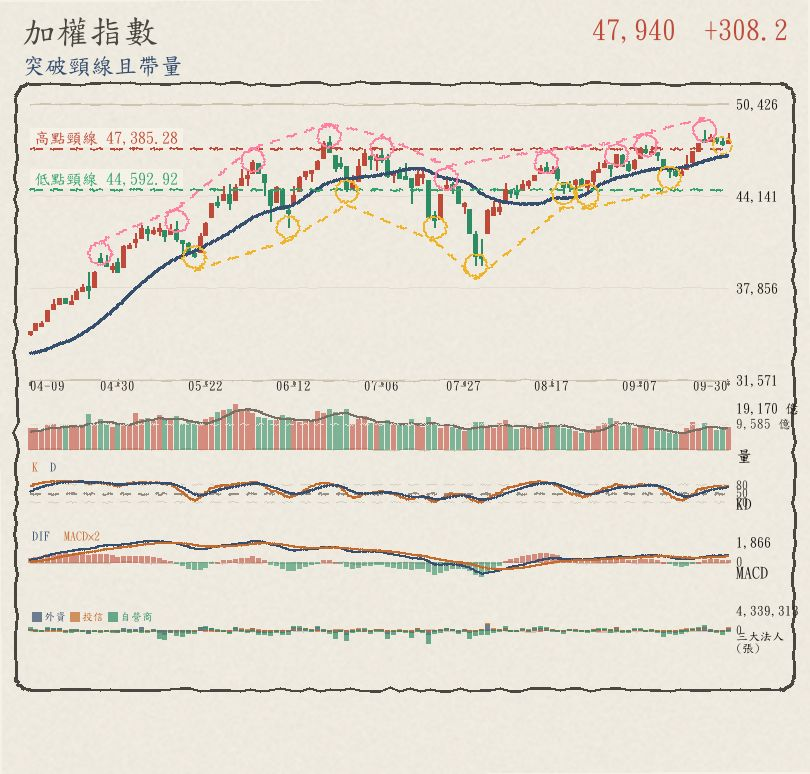
圖說：加權指數日 K（與個股圖相同標記）：黃圈＝轉折低點、粉圈＝轉折高點、虛線小圈＝還沒確認的轉折、藍線＝月線 MA20、水平虛線＝高點／低點頸線。最後一根是資料日當天。
本區塊為公開資料的技術面觀察，不構成投資建議，
不報牌、不預測、不下買賣決策。成交金額為集中市場總成交金額（含 ETF／權證），
與頁首摘要的「上市個股成交金額」口徑不同。標籤是統計，不是評分、也不是推薦。
上市 vs 上櫃（同期快篩）
加權 +0.65% vs 櫃買 +1.17%（同向） → 同向
（兩個市場分開寫，不合併成一個數字；櫃買為 TPEX 公開資料）
櫃買歷史：TPEX 逐日回補 130 根；來源：櫃買中心 www/zh-tw/indexInfo/sectinx（逐日，官方；OpenAPI tpex_index 只回當月）
（TPEX OpenAPI 只回當月，故逐日回補；歷史不足就不算該條均線並標「資料不足」，不用錯數字）
近 20 個交易日大盤狀態回溯（最新在上）（點開看逐日主狀態／量比／量價象限）
用同一支程式回算最近 20 個交易日（主狀態 S1~S8 與量比 20 皆為當日收盤當時的判定，
不是事後調整）；量比 20 未公布的日子寫「—」。
好條件最多的（前 10）
不好條件最多的（前 10）
好條件（8 項）：站上月線、月線向上、底底高、頭頭高、突破頸線、相對大盤強、外資買超、量價攻擊（收紅＋大量）。
不好條件（8 項）：跌破前低、今日下跌、相對大盤弱、在月線之下、量增下跌（出貨）、外資賣超、月線下彎、收盤跌破前一日低點。
兩邊都是同一組資料（日線結構＋當日收盤量價籌碼）算出來的「符合項目數」，只是方向相反；
條件數不是評分、也不是推薦，不構成投資建議。
上升趨勢：底底高 ＋ 頭頭高（17 上市 13／上櫃 4）
量價攻擊（收紅＋大量）（31 上市 22／上櫃 9）
逐檔分析（70 檔）
區間或轉弱 成交金額 853.89 億・全榜第 1 名（上市第 1 名）
好條件 5/8：站上月線、月線向上、突破頸線、外資買超、量價攻擊（收紅＋大量）
不好條件 1/8：相對大盤弱
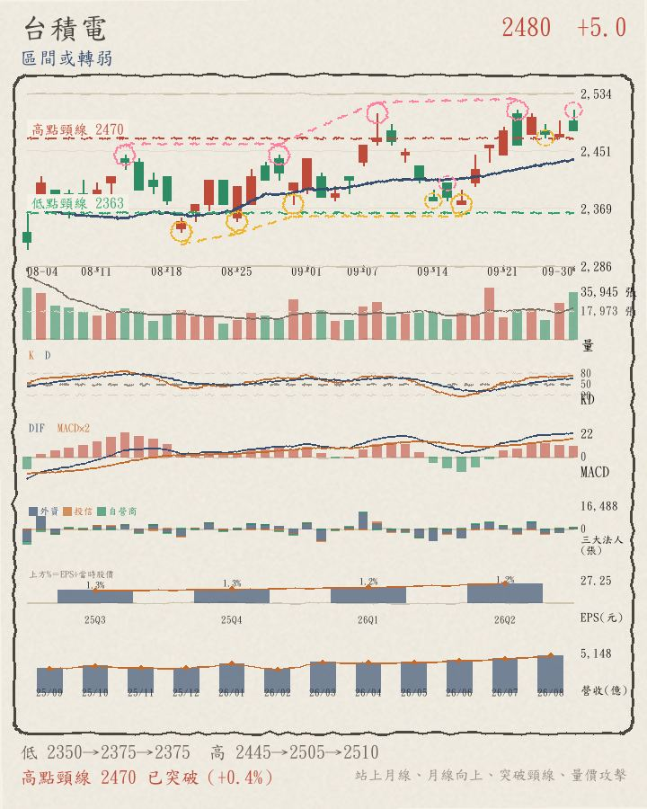
今天帶量收紅、站上月線 2439，已站上高點頸線 2470，轉折還沒走出明顯方向。
- 月線位置：收盤 2480 在月線 2439 之上；5 日線 2478 也在月線之上（短均在上）；月線向上、5 日線向上
- 量能：成交量是 20 日均量的 1.70 倍，比 20 日均量大不少；收紅又量增，量價配合
- 關鍵價位：高點頸線 2470 已站上；最近轉折高點 2510（低於 1.2%）；最近轉折低點 2375（高於 4.4%）
- 轉折結構：低點 2350、2375、2375 與高點 2445、2505、2510 都沒有明顯遞增，屬於區間震盪或轉弱；還沒確認的轉折低點 09-14 2380、09-24 2470；還沒確認的轉折高點 09-15 2405、09-30 2510（圖上虛線小圈）
高點墊高、底部不穩 成交金額 414.54 億・全榜第 2 名（上市第 2 名）
好條件 4/8：站上月線、月線向上、頭頭高、量價攻擊（收紅＋大量）
不好條件 2/8：相對大盤弱、外資賣超
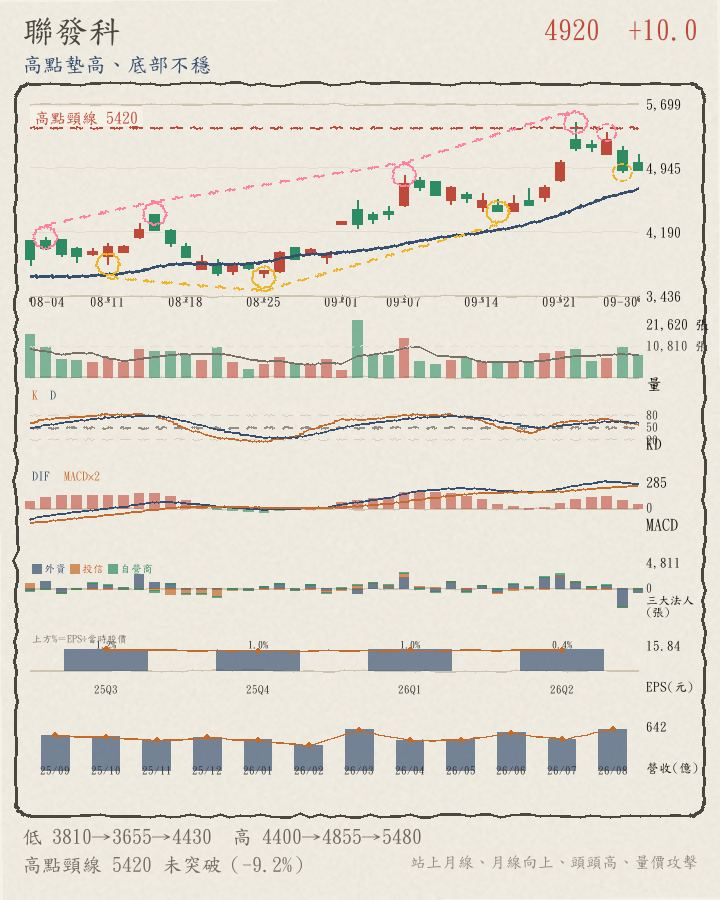
今天收紅、站上月線 4698.25，離高點頸線 5420 還差 9.2%，高點還在墊高（但底部沒同步墊高）。
- 月線位置：收盤 4920 在月線 4698.25 之上；5 日線 5096 也在月線之上（短均在上）；月線向上、5 日線向上
- 量能：成交量是 20 日均量的 1.01 倍，跟 20 日均量差不多
- 關鍵價位：高點頸線 5420 還沒突破，差 9.2%；最近轉折高點 5480（低於 10.2%）；最近轉折低點 4430（高於 11.1%）
- 轉折結構：高點 4400、4855、5480 墊高 24.5%（頭頭高），但低點 3810、3655、4430 沒有同步墊高；還沒確認的轉折低點 09-29 4890；還沒確認的轉折高點 09-24 5360（圖上虛線小圈）
底部墊高、突破前高 成交金額 315.18 億・全榜第 3 名（上市第 3 名）
好條件 8/8：站上月線、月線向上、底底高、頭頭高、突破頸線、相對大盤強、外資買超、量價攻擊（收紅＋大量）
不好條件 0/8：無
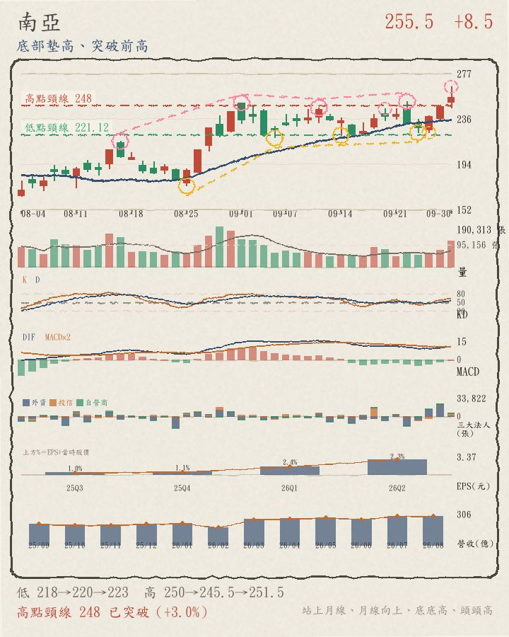
今天帶量收紅、站上月線 234.575，已站上高點頸線 248，轉折結構仍是底底高＋頭頭高。
- 月線位置：收盤 255.5 在月線 234.575 之上；5 日線 239.9 也在月線之上（短均在上）；月線向上、5 日線向上
- 量能：成交量是 20 日均量的 1.58 倍，比 20 日均量大不少；收紅又量增，量價配合
- 關鍵價位：高點頸線 248 已站上；最近轉折高點 251.5（高於 1.6%）；最近轉折低點 223（高於 14.6%）
- 轉折結構：低點 218、220.5、223 一路墊高 2.3%、高點 250、245.5、251.5 也一路墊高 5.4%，是底底高＋頭頭高；還沒確認的轉折低點 09-24 223；還沒確認的轉折高點 09-18 245、09-30 265（圖上虛線小圈）
剛突破前高 成交金額 260.83 億・全榜第 4 名（上市第 4 名）
好條件 7/8：站上月線、月線向上、頭頭高、突破頸線、相對大盤強、外資買超、量價攻擊（收紅＋大量）
不好條件 0/8：無
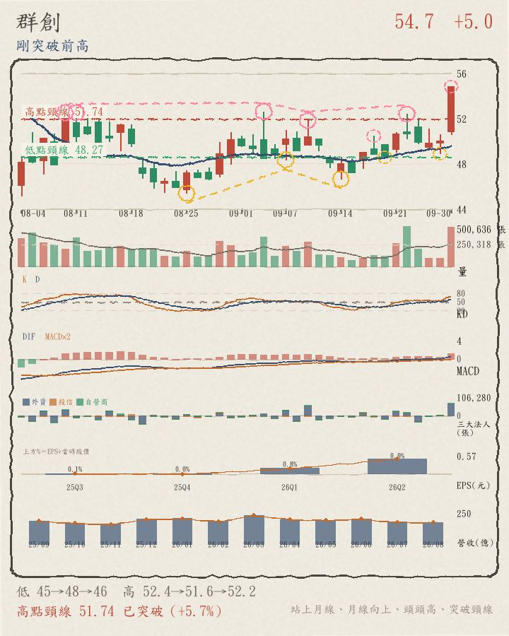
今天帶量收紅、站上月線 49.262，已站上高點頸線 51.74，高點還在墊高（但底部沒同步墊高）。
- 月線位置：收盤 54.7 在月線 49.262 之上；5 日線 50.82 也在月線之上（短均在上）；月線向上、5 日線向上
- 量能：成交量是 20 日均量的 2.53 倍，比 20 日均量大不少；收紅又量增，量價配合
- 關鍵價位：高點頸線 51.74 已站上；最近轉折高點 52.2（高於 4.8%）；最近轉折低點 46.25（高於 18.3%）
- 轉折結構：高點 52.4、51.6、52.2 墊高 4.8%（頭頭高），但低點 44.95、48、46.25 沒有同步墊高；還沒確認的轉折低點 09-18 48.25、09-29 48.55；還沒確認的轉折高點 09-17 50.2、09-30 54.7（圖上虛線小圈）
剛突破前高 成交金額 228.6 億・全榜第 5 名（上市第 5 名）
好條件 6/8：站上月線、月線向上、頭頭高、突破頸線、相對大盤強、量價攻擊（收紅＋大量）
不好條件 1/8：外資賣超
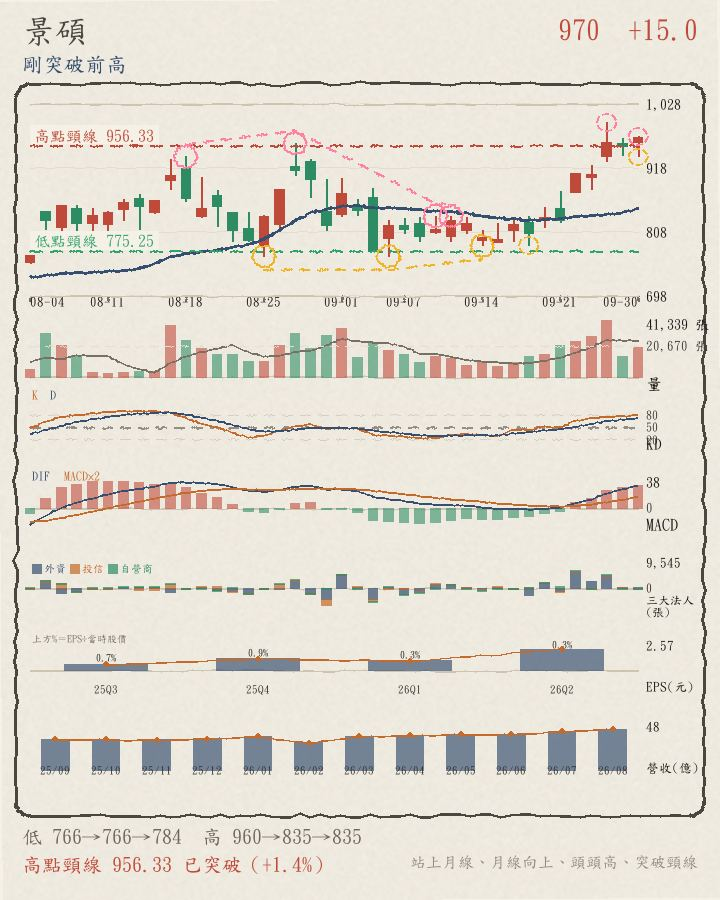
今天帶量收紅、站上月線 848.4，已站上高點頸線 956.33，高點還在墊高（但底部沒同步墊高）。
- 月線位置：收盤 970 在月線 848.4 之上；5 日線 940.4 也在月線之上（短均在上）；月線向上、5 日線向上
- 量能：成交量是 20 日均量的 1.11 倍，比 20 日均量大一些；收紅又量增，量價配合
- 關鍵價位：高點頸線 956.33 已站上；最近轉折高點 835（高於 16.2%）；最近轉折低點 784（高於 23.7%）
- 轉折結構：高點 960、835、835 墊高 19.3%（頭頭高），但低點 766、766、784 沒有同步墊高；還沒確認的轉折低點 09-17 785、09-30 937；還沒確認的轉折高點 09-24 996、09-30 972（圖上虛線小圈）
剛突破前高 成交金額 215.38 億・全榜第 7 名（上市第 6 名）
好條件 3/8：站上月線、月線向上、頭頭高
不好條件 3/8：相對大盤弱、量增下跌（出貨）、外資賣超
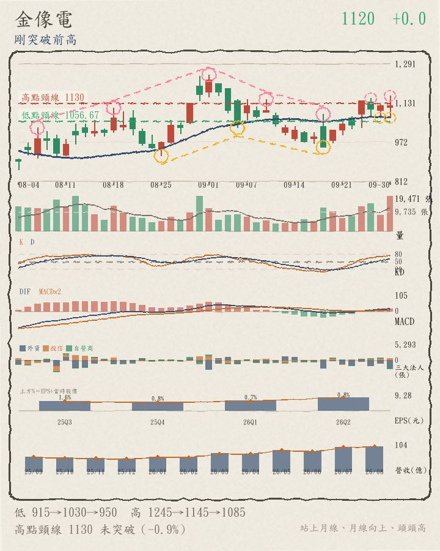
今天帶量收黑、站上月線 1071.95，離高點頸線 1130 還差 0.9%，高點還在墊高（但底部沒同步墊高）。
- 月線位置：收盤 1120 在月線 1071.95 之上；5 日線 1105 也在月線之上（短均在上）；月線向上、5 日線向上
- 量能：成交量是 20 日均量的 2.22 倍，比 20 日均量大不少；收黑卻量增，量價背離
- 關鍵價位：高點頸線 1130 還沒突破，差 0.9%；最近轉折高點 1085（高於 3.2%）；最近轉折低點 950（高於 17.9%）
- 轉折結構：高點 1245、1145、1085 墊高 6.9%（頭頭高），但低點 915、1030、950 沒有同步墊高；還沒確認的轉折低點 09-29 1070、09-30 1070；還沒確認的轉折高點 09-24 1150、09-30 1160（圖上虛線小圈）
高點墊高、底部不穩 成交金額 211.31 億・全榜第 8 名（上市第 7 名）
好條件 6/8：站上月線、月線向上、頭頭高、相對大盤強、外資買超、量價攻擊（收紅＋大量）
不好條件 0/8：無
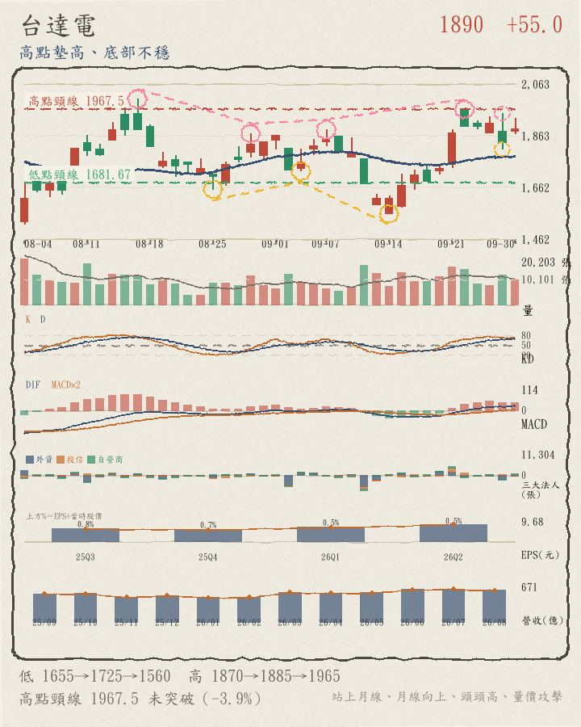
今天收紅、站上月線 1782.75，離高點頸線 1967.5 還差 3.9%，高點還在墊高（但底部沒同步墊高）。
- 月線位置：收盤 1890 在月線 1782.75 之上；5 日線 1887 也在月線之上（短均在上）；月線向上、5 日線向上
- 量能：成交量是 20 日均量的 1.02 倍，跟 20 日均量差不多
- 關鍵價位：高點頸線 1967.5 還沒突破，差 3.9%；最近轉折高點 1965（低於 3.8%）；最近轉折低點 1560（高於 21.2%）
- 轉折結構：高點 1870、1885、1965 墊高 5.1%（頭頭高），但低點 1655、1725、1560 沒有同步墊高；還沒確認的轉折低點 09-29 1810；還沒確認的轉折高點 09-29 1950（圖上虛線小圈）
區間或轉弱 成交金額 206.19 億・全榜第 9 名（上市第 8 名）
好條件 3/8：站上月線、相對大盤強、外資買超
不好條件 1/8：月線下彎
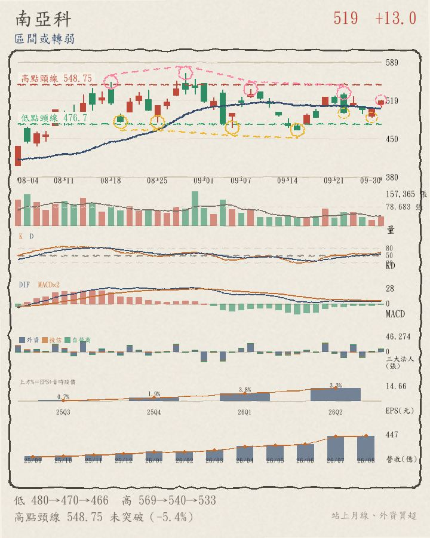
今天收紅、但成交量比平均少、站上月線 504.425，離高點頸線 548.75 還差 5.4%，轉折還沒走出明顯方向。
- 月線位置：收盤 519 在月線 504.425 之上；5 日線 508 也在月線之上（短均在上）；月線走平或向下、5 日線向上
- 量能：成交量是 20 日均量的 0.68 倍，比 20 日均量少很多；收紅但量縮，量價背離
- 關鍵價位：高點頸線 548.75 還沒突破，差 5.4%；最近轉折高點 533（低於 2.6%）；最近轉折低點 465.5（高於 11.5%）
- 轉折結構：低點 480、470、465.5 與高點 569、540、533 都沒有明顯遞增，屬於區間震盪或轉弱；還沒確認的轉折低點 09-22 496、09-29 488；還沒確認的轉折高點 09-30 520（圖上虛線小圈）
底部墊高、突破前高 成交金額 176.35 億・全榜第 12 名（上市第 9 名）
好條件 8/8：站上月線、月線向上、底底高、頭頭高、突破頸線、相對大盤強、外資買超、量價攻擊（收紅＋大量）
不好條件 0/8：無
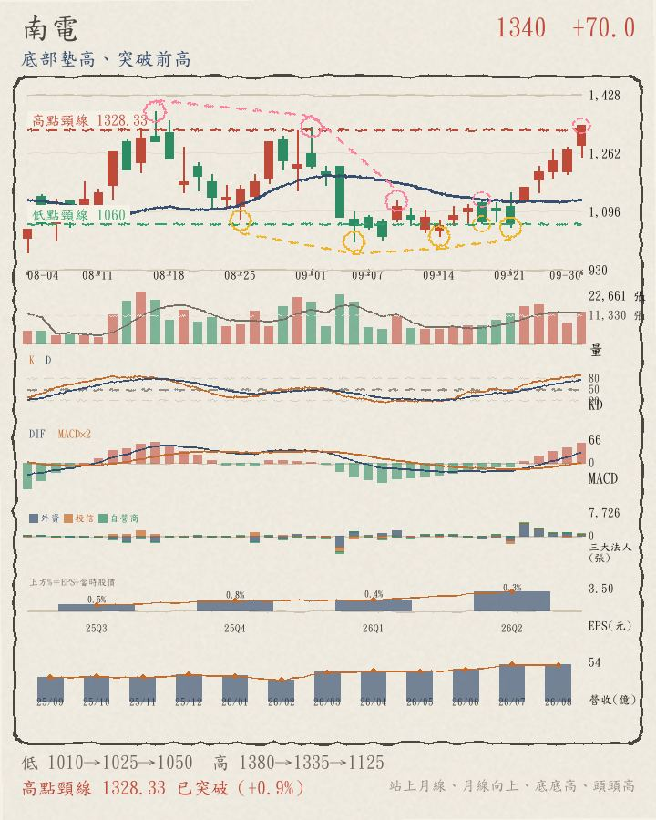
今天帶量收紅、站上月線 1129.5，已站上高點頸線 1328.33，轉折結構仍是底底高＋頭頭高。
- 月線位置：收盤 1340 在月線 1129.5 之上；5 日線 1245 也在月線之上（短均在上）；月線向上、5 日線向上
- 量能：成交量是 20 日均量的 1.18 倍，比 20 日均量大不少；收紅又量增，量價配合
- 關鍵價位：高點頸線 1328.33 已站上；最近轉折高點 1125（高於 19.1%）；最近轉折低點 1050（高於 27.6%）
- 轉折結構：低點 1010、1025、1050 一路墊高 4.0%、高點 1380、1335、1125 也一路墊高 19.1%，是底底高＋頭頭高；還沒確認的轉折低點 09-17 1060；還沒確認的轉折高點 09-17 1130、09-30 1340（圖上虛線小圈）
高點墊高、底部不穩 成交金額 163.07 億・全榜第 13 名（上市第 10 名）
好條件 6/8：站上月線、月線向上、頭頭高、突破頸線、相對大盤強、外資買超
不好條件 0/8：無
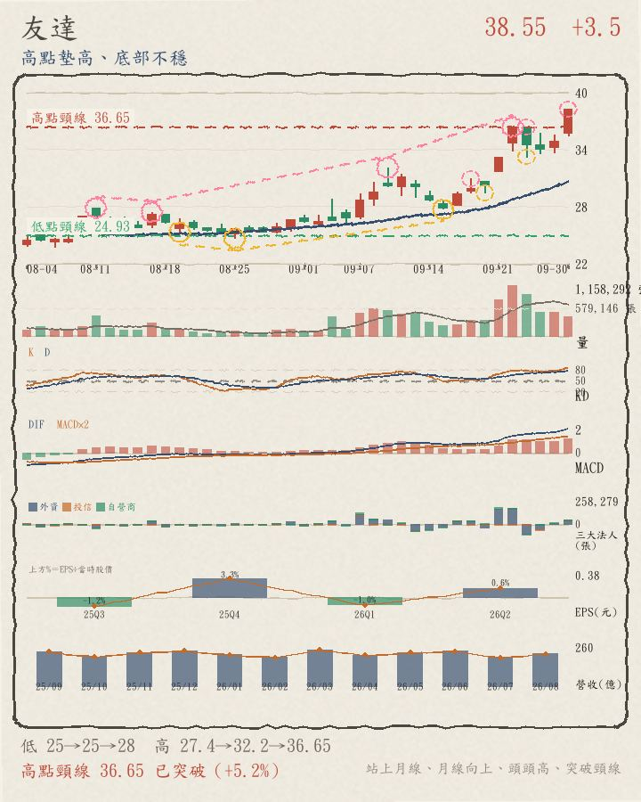
今天收紅、但成交量比平均少、站上月線 30.76，已站上高點頸線 36.65，高點還在墊高（但底部沒同步墊高）。
- 月線位置：收盤 38.55 在月線 30.76 之上；5 日線 35.83 也在月線之上（短均在上）；月線向上、5 日線向上
- 量能：成交量是 20 日均量的 0.93 倍，比 20 日均量少一些；收紅但量縮，量價背離
- 關鍵價位：高點頸線 36.65 已站上；最近轉折高點 36.65（高於 5.2%）；最近轉折低點 27.75（高於 38.9%）
- 轉折結構：高點 27.4、32.2、36.65 墊高 33.8%（頭頭高），但低點 25.25、24.6、27.75 沒有同步墊高；還沒確認的轉折低點 09-18 29.5、09-23 33.4；還沒確認的轉折高點 09-23 36.65、09-30 38.55（圖上虛線小圈）
上升趨勢（底底高＋頭頭高） 成交金額 160.16 億・全榜第 14 名（上市第 11 名）
好條件 4/8：站上月線、月線向上、底底高、頭頭高
不好條件 1/8：外資賣超
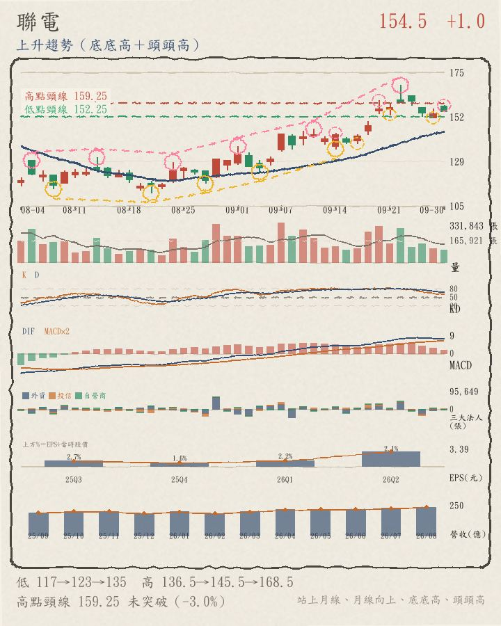
今天收紅、但成交量比平均少、站上月線 144.175，離高點頸線 159.25 還差 3.0%，轉折結構仍是底底高＋頭頭高。
- 月線位置：收盤 154.5 在月線 144.175 之上；5 日線 156.4 也在月線之上（短均在上）；月線向上、5 日線向上
- 量能：成交量是 20 日均量的 0.55 倍，比 20 日均量少很多；收紅但量縮，量價背離
- 關鍵價位：高點頸線 159.25 還沒突破，差 3.0%；最近轉折高點 168.5（低於 8.3%）；最近轉折低點 135（高於 14.4%）
- 轉折結構：低點 117、123、135 一路墊高 15.4%、高點 136.5、145.5、168.5 也一路墊高 23.4%，是底底高＋頭頭高；還沒確認的轉折低點 09-21 153、09-29 151.5；還沒確認的轉折高點 09-18 160.5、09-30 158（圖上虛線小圈）
貿聯-KY 3665 上市
2595 +150.0
剛突破前高 成交金額 159.14 億・全榜第 15 名（上市第 12 名）
好條件 6/8：站上月線、月線向上、頭頭高、突破頸線、相對大盤強、量價攻擊（收紅＋大量）
不好條件 1/8：外資賣超
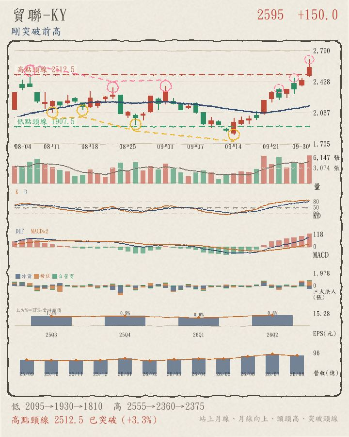
今天帶量收紅、站上月線 2146.5，已站上高點頸線 2512.5，高點還在墊高（但底部沒同步墊高）。
- 月線位置：收盤 2595 在月線 2146.5 之上；5 日線 2393 也在月線之上（短均在上）；月線向上、5 日線向上
- 量能：成交量是 20 日均量的 1.98 倍，比 20 日均量大不少；收紅又量增，量價配合
- 關鍵價位：高點頸線 2512.5 已站上；最近轉折高點 2375（高於 9.3%）；最近轉折低點 1810（高於 43.4%）
- 轉折結構：高點 2555、2360、2375 墊高 13.1%（頭頭高），但低點 2095、1930、1810 沒有同步墊高；還沒確認的轉折高點 09-24 2470、09-30 2685（圖上虛線小圈）
底部墊高、突破前高 成交金額 155.14 億・全榜第 16 名（上市第 13 名）
好條件 6/8：站上月線、月線向上、底底高、頭頭高、相對大盤強、外資買超
不好條件 0/8：無
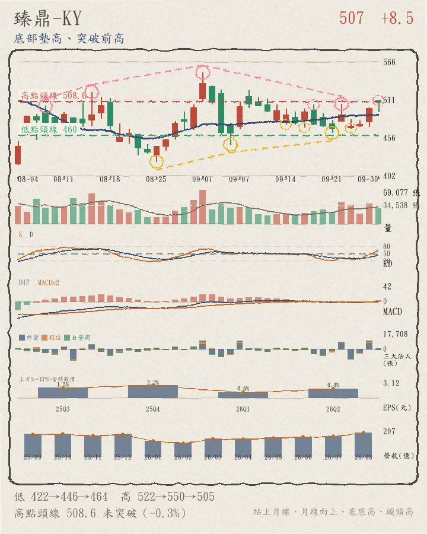
今天收紅、站上月線 489.45，離高點頸線 508.6 還差 0.3%，轉折結構仍是底底高＋頭頭高。
- 月線位置：收盤 507 在月線 489.45 之上；5 日線 488.6 也在月線之下（短均在下）；月線向上、5 日線向上
- 量能：成交量是 20 日均量的 1.00 倍，跟 20 日均量差不多
- 關鍵價位：高點頸線 508.6 還沒突破，差 0.3%；最近轉折高點 505（高於 0.4%）；最近轉折低點 463.5（高於 9.4%）
- 轉折結構：低點 421.5、446.5、463.5 一路墊高 10.0%、高點 522、550、505 也一路墊高 1.0%，是底底高＋頭頭高；還沒確認的轉折低點 09-16 471、09-23 470；還沒確認的轉折高點 09-17 504、09-30 510（圖上虛線小圈）
區間或轉弱 成交金額 150.96 億・全榜第 17 名（上市第 14 名）
好條件 3/8：站上月線、相對大盤強、外資買超
不好條件 1/8：月線下彎
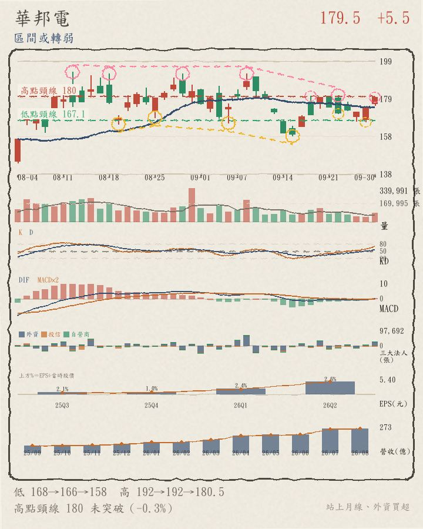
今天收紅、但成交量比平均少、站上月線 174.025，離高點頸線 180 還差 0.3%，轉折還沒走出明顯方向。
- 月線位置：收盤 179.5 在月線 174.025 之上；5 日線 173.7 也在月線之下（短均在下）；月線走平或向下、5 日線向上
- 量能：成交量是 20 日均量的 0.74 倍，比 20 日均量少很多；收紅但量縮，量價背離
- 關鍵價位：高點頸線 180 還沒突破，差 0.3%；最近轉折高點 180.5（低於 0.6%）；最近轉折低點 158.5（高於 13.2%）
- 轉折結構：低點 168.5、165.5、158.5 與高點 192、192、180.5 都沒有明顯遞增，屬於區間震盪或轉弱；還沒確認的轉折低點 09-22 170.5、09-29 166；還沒確認的轉折高點 09-17 180、09-30 179.5（圖上虛線小圈）
剛突破前高 成交金額 149.87 億・全榜第 18 名（上市第 15 名）
好條件 5/8：站上月線、月線向上、頭頭高、突破頸線、量價攻擊（收紅＋大量）
不好條件 2/8：相對大盤弱、外資賣超
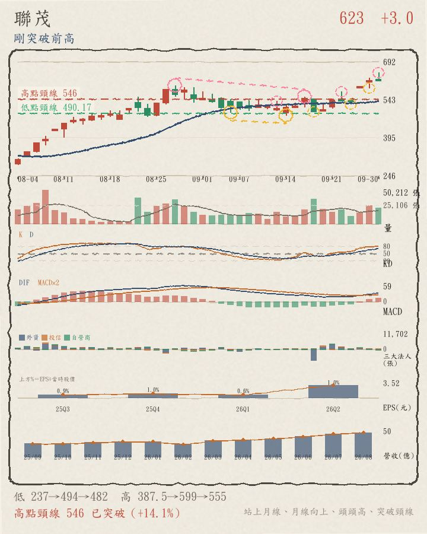
今天帶量收紅、站上月線 536.85，已站上高點頸線 546，高點還在墊高（但底部沒同步墊高）。
- 月線位置：收盤 623 在月線 536.85 之上；5 日線 584.4 也在月線之上（短均在上）；月線向上、5 日線向上
- 量能：成交量是 20 日均量的 1.44 倍，比 20 日均量大不少；收紅又量增，量價配合
- 關鍵價位：高點頸線 546 已站上；最近轉折高點 555（高於 12.3%）；最近轉折低點 482（高於 29.3%）
- 轉折結構：高點 387.5、599、555 墊高 16.9%（頭頭高），但低點 237、493.5、482 沒有同步墊高；還沒確認的轉折低點 09-23 525、09-29 588；還沒確認的轉折高點 09-22 574、09-30 649（圖上虛線小圈）
區間或轉弱 成交金額 138.57 億・全榜第 19 名（上市第 16 名）
好條件 1/8：月線向上
不好條件 3/8：相對大盤弱、在月線之下、外資賣超
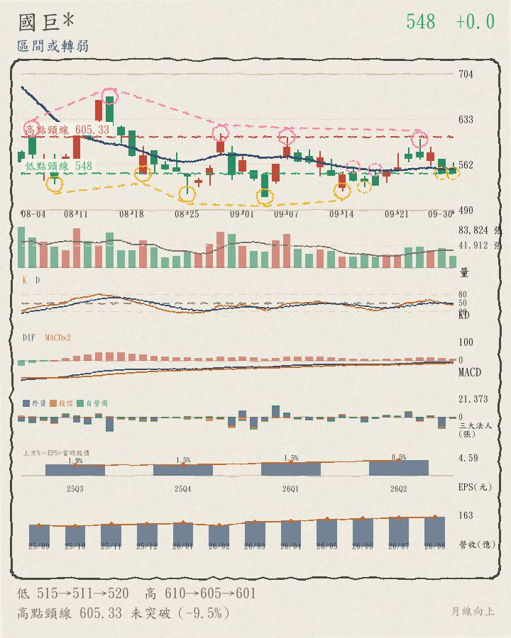
今天收黑、成交量也比平均少、跌破月線 554.6，離高點頸線 605.33 還差 9.5%，轉折還沒走出明顯方向。
- 月線位置：收盤 548 在月線 554.6 之下；5 日線 564 也在月線之上（短均在上）；月線向上、5 日線向上
- 量能：成交量是 20 日均量的 0.63 倍，比 20 日均量少很多
- 關鍵價位：高點頸線 605.33 還沒突破，差 9.5%；最近轉折高點 601（低於 8.8%）；最近轉折低點 520（高於 5.4%）
- 轉折結構：低點 515、511、520 與高點 610、605、601 都沒有明顯遞增，屬於區間震盪或轉弱；還沒確認的轉折低點 09-29 548、09-30 548；還沒確認的轉折高點 09-15 558、09-17 553（圖上虛線小圈）
高點墊高、底部不穩 成交金額 127.41 億・全榜第 20 名（上市第 17 名）
好條件 6/8：站上月線、月線向上、頭頭高、相對大盤強、外資買超、量價攻擊（收紅＋大量）
不好條件 0/8：無
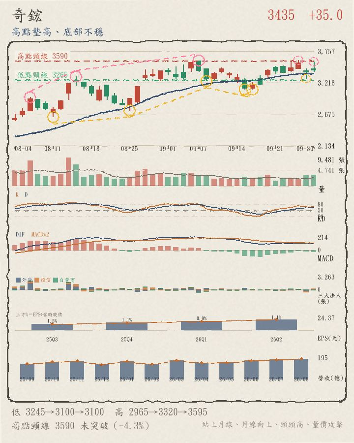
今天帶量收紅、站上月線 3369.25，離高點頸線 3590 還差 4.3%，高點還在墊高（但底部沒同步墊高）。
- 月線位置：收盤 3435 在月線 3369.25 之上；5 日線 3450 也在月線之上（短均在上）；月線向上、5 日線向上
- 量能：成交量是 20 日均量的 1.27 倍，比 20 日均量大不少；收紅又量增，量價配合
- 關鍵價位：高點頸線 3590 還沒突破，差 4.3%；最近轉折高點 3595（低於 4.5%）；最近轉折低點 3100（高於 10.8%）
- 轉折結構：高點 2965、3320、3595 墊高 21.2%（頭頭高），但低點 3245、3100、3100 沒有同步墊高；還沒確認的轉折低點 09-29 3285；還沒確認的轉折高點 09-24 3600、09-30 3575（圖上虛線小圈）
區間或轉弱 成交金額 127.27 億・全榜第 21 名（上市第 18 名）
好條件 1/8：外資買超
不好條件 7/8：跌破前低、今日下跌、相對大盤弱、在月線之下、量增下跌（出貨）、月線下彎、收盤跌破前一日低點
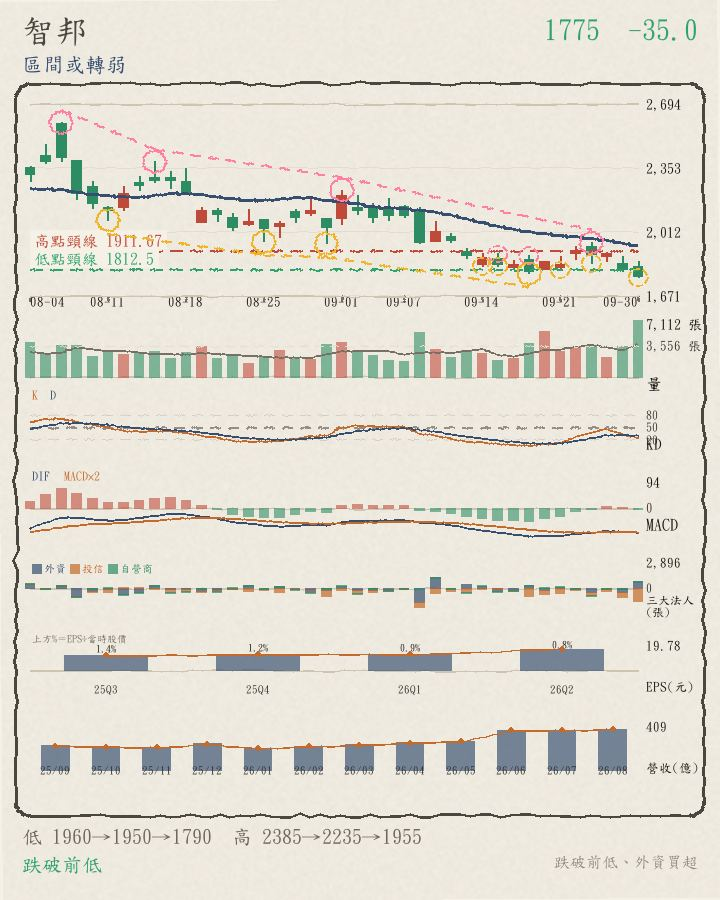
今天帶量收黑、跌破月線 1939.5，跌破前一個轉折低點（高點頸線 1911.67 還在收盤上方），轉折還沒走出明顯方向。
- 月線位置：收盤 1775 在月線 1939.5 之下；5 日線 1857 也在月線之下（短均在下）；月線走平或向下、5 日線向上
- 量能：成交量是 20 日均量的 2.12 倍，比 20 日均量大不少；收黑卻量增，量價背離
- 關鍵價位：高點頸線 1911.67 還沒突破、還在收盤上方 7.1%；最近轉折高點 1955（低於 9.2%）；最近轉折低點 1790（低於 0.8%）
- 轉折結構：低點 1960、1950、1790 與高點 2385、2235、1955 都沒有明顯遞增，屬於區間震盪或轉弱；還沒確認的轉折低點 09-23 1845、09-30 1770；還沒確認的轉折高點 09-15 1895、09-17 1885（圖上虛線小圈）
區間或轉弱 成交金額 126.43 億・全榜第 22 名（上市第 19 名）
好條件 4/8：站上月線、月線向上、相對大盤強、外資買超
不好條件 0/8：無
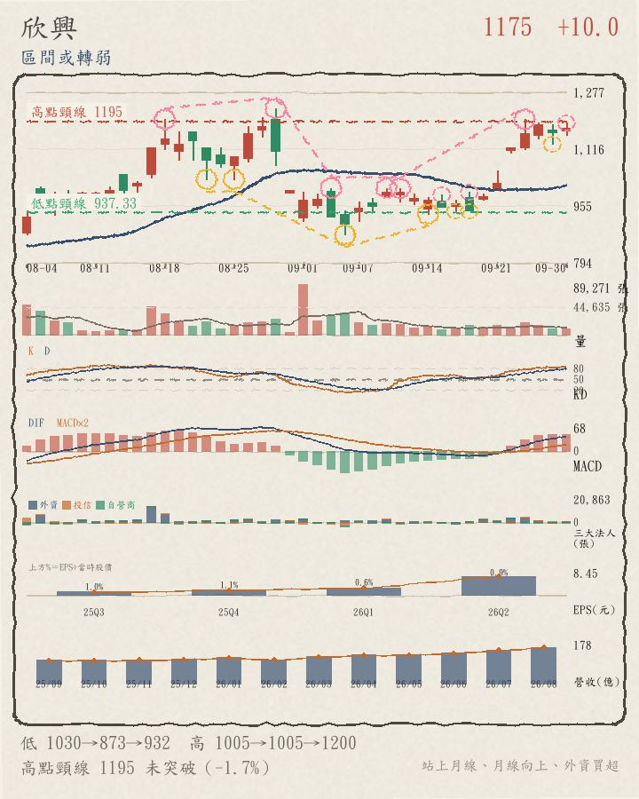
今天收紅、但成交量比平均少、站上月線 1013.2，離高點頸線 1195 還差 1.7%，轉折還沒走出明顯方向。
- 月線位置：收盤 1175 在月線 1013.2 之上；5 日線 1161 也在月線之上（短均在上）；月線向上、5 日線向上
- 量能：成交量是 20 日均量的 0.52 倍，比 20 日均量少很多；收紅但量縮，量價背離
- 關鍵價位：高點頸線 1195 還沒突破，差 1.7%；最近轉折高點 1200（低於 2.1%）；最近轉折低點 932（高於 26.1%）
- 轉折結構：低點 1030、873、932 與高點 1005、1005、1200 都沒有明顯遞增，屬於區間震盪或轉弱；還沒確認的轉折低點 09-17 940、09-29 1130；還沒確認的轉折高點 09-17 993、09-30 1190（圖上虛線小圈）
上升趨勢（底底高＋頭頭高） 成交金額 104.01 億・全榜第 23 名（上市第 20 名）
好條件 6/8：站上月線、月線向上、底底高、頭頭高、相對大盤強、外資買超
不好條件 0/8：無
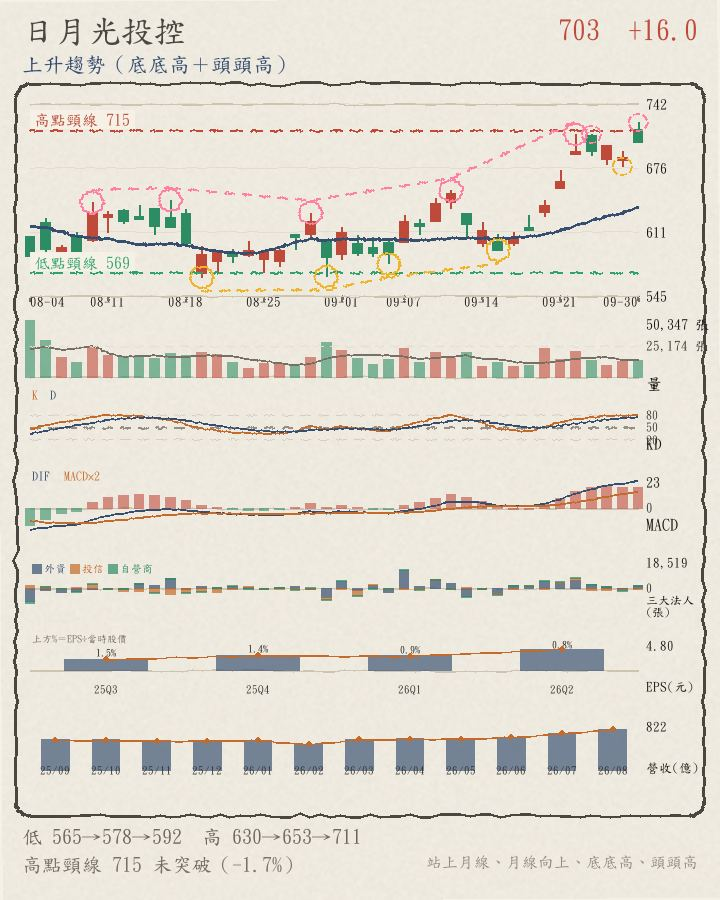
今天收紅、但成交量比平均少、站上月線 636.1，離高點頸線 715 還差 1.7%，轉折結構仍是底底高＋頭頭高。
- 月線位置：收盤 703 在月線 636.1 之上；5 日線 695 也在月線之上（短均在上）；月線向上、5 日線向上
- 量能：成交量是 20 日均量的 0.86 倍，比 20 日均量少一些；收紅但量縮，量價背離
- 關鍵價位：高點頸線 715 還沒突破，差 1.7%；最近轉折高點 711（低於 1.1%）；最近轉折低點 592（高於 18.8%）
- 轉折結構：低點 565、578、592 一路墊高 4.8%、高點 630、653、711 也一路墊高 12.9%，是底底高＋頭頭高；還沒確認的轉折低點 09-29 678；還沒確認的轉折高點 09-23 711、09-30 723（圖上虛線小圈）
剛突破前高 成交金額 101.87 億・全榜第 24 名（上市第 21 名）
好條件 7/8：站上月線、月線向上、頭頭高、突破頸線、相對大盤強、外資買超、量價攻擊（收紅＋大量）
不好條件 0/8：無
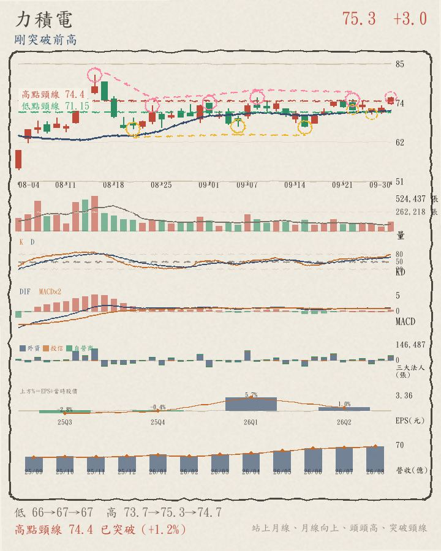
今天帶量收紅、站上月線 71.465，已站上高點頸線 74.4，高點還在墊高（但底部沒同步墊高）。
- 月線位置：收盤 75.3 在月線 71.465 之上；5 日線 72.9 也在月線之上（短均在上）；月線向上、5 日線向上
- 量能：成交量是 20 日均量的 1.08 倍，比 20 日均量大一些；收紅又量增，量價配合
- 關鍵價位：高點頸線 74.4 已站上；最近轉折高點 74.7（高於 0.8%）；最近轉折低點 66.7（高於 12.9%）
- 轉折結構：高點 73.7、75.3、74.7 墊高 0.9%（頭頭高），但低點 66.2、67、66.7 沒有同步墊高；還沒確認的轉折低點 09-22 71.8、09-24 70.5；還沒確認的轉折高點 09-30 75.4（圖上虛線小圈）
區間或轉弱 成交金額 100.09 億・全榜第 25 名（上市第 22 名）
好條件 0/8：無
不好條件 5/8：今日下跌、相對大盤弱、在月線之下、外資賣超、月線下彎
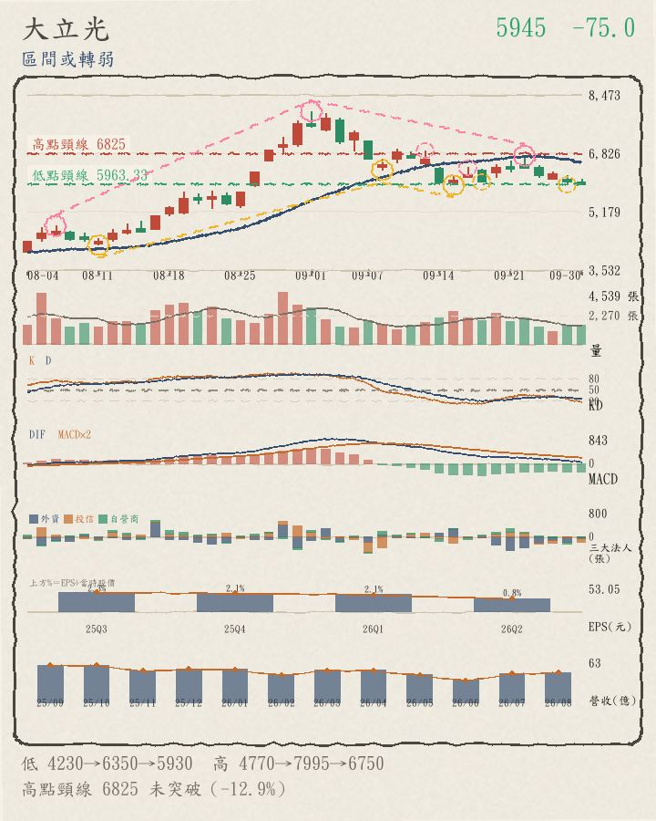
今天收黑、成交量也比平均少、跌破月線 6564，離高點頸線 6825 還差 12.9%，轉折還沒走出明顯方向。
- 月線位置：收盤 5945 在月線 6564 之下；5 日線 6161 也在月線之下（短均在下）；月線走平或向下、5 日線走平或向下
- 量能：成交量是 20 日均量的 0.82 倍，比 20 日均量少很多
- 關鍵價位：高點頸線 6825 還沒突破，差 12.9%；最近轉折高點 6750（低於 11.9%）；最近轉折低點 5930（高於 0.3%）
- 轉折結構：低點 4230、6350、5930 與高點 4770、7995、6750 都沒有明顯遞增，屬於區間震盪或轉弱；還沒確認的轉折低點 09-17 6020、09-29 5940；還沒確認的轉折高點 09-11 6900、09-16 6415（圖上虛線小圈）
區間或轉弱 成交金額 92.84 億・全榜第 26 名（上市第 23 名）
好條件 4/8：站上月線、突破頸線、相對大盤強、量價攻擊（收紅＋大量）
不好條件 2/8：外資賣超、月線下彎
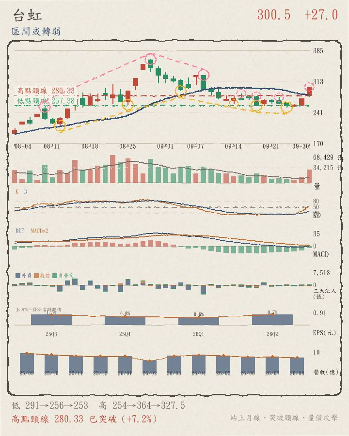
今天帶量收紅、站上月線 282.15，已站上高點頸線 280.33，轉折還沒走出明顯方向。
- 月線位置：收盤 300.5 在月線 282.15 之上；5 日線 270.2 也在月線之下（短均在下）；月線走平或向下、5 日線向上
- 量能：成交量是 20 日均量的 1.42 倍，比 20 日均量大不少；收紅又量增，量價配合
- 關鍵價位：高點頸線 280.33 已站上；最近轉折高點 327.5（低於 8.2%）；最近轉折低點 253（高於 18.8%）
- 轉折結構：低點 291、256.5、253 與高點 254、364、327.5 都沒有明顯遞增，屬於區間震盪或轉弱；還沒確認的轉折低點 09-14 261；還沒確認的轉折高點 09-22 277、09-30 300.5（圖上虛線小圈）
剛突破前高 成交金額 89.08 億・全榜第 28 名（上市第 24 名）
好條件 4/8：站上月線、月線向上、頭頭高、突破頸線
不好條件 5/8：今日下跌、相對大盤弱、量增下跌（出貨）、外資賣超、收盤跌破前一日低點
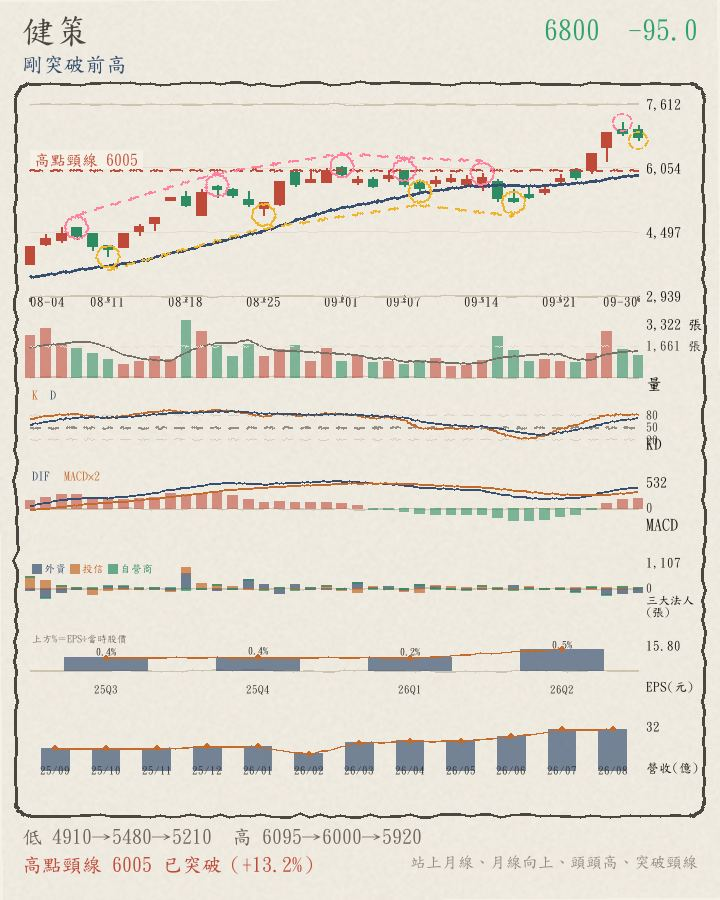
今天收黑、站上月線 5878，已站上高點頸線 6005，高點還在墊高（但底部沒同步墊高）。
- 月線位置：收盤 6800 在月線 5878 之上；5 日線 6571 也在月線之上（短均在上）；月線向上、5 日線向上
- 量能：成交量是 20 日均量的 1.03 倍，跟 20 日均量差不多
- 關鍵價位：高點頸線 6005 已站上；最近轉折高點 5920（高於 14.9%）；最近轉折低點 5210（高於 30.5%）
- 轉折結構：高點 6095、6000、5920 墊高 20.9%（頭頭高），但低點 4910、5480、5210 沒有同步墊高；還沒確認的轉折低點 09-30 6720；還沒確認的轉折高點 09-29 7160（圖上虛線小圈）
區間或轉弱 成交金額 88.02 億・全榜第 29 名（上市第 25 名）
好條件 5/8：站上月線、月線向上、相對大盤強、外資買超、量價攻擊（收紅＋大量）
不好條件 0/8：無
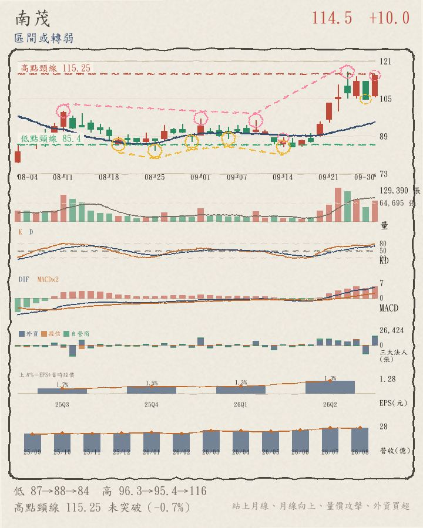
今天帶量收紅、站上月線 94.93，離高點頸線 115.25 還差 0.7%，轉折還沒走出明顯方向。
- 月線位置：收盤 114.5 在月線 94.93 之上；5 日線 108.7 也在月線之上（短均在上）；月線向上、5 日線向上
- 量能：成交量是 20 日均量的 2.09 倍，比 20 日均量大不少；收紅又量增，量價配合
- 關鍵價位：高點頸線 115.25 還沒突破，差 0.7%；最近轉折高點 116（低於 1.3%）；最近轉折低點 84.3（高於 35.8%）
- 轉折結構：低點 86.6、87.9、84.3 與高點 96.3、95.4、116 都沒有明顯遞增，屬於區間震盪或轉弱；還沒確認的轉折低點 09-29 104.5；還沒確認的轉折高點 09-14 88.2、09-30 114.5（圖上虛線小圈）
底部墊高、突破前高 成交金額 78.8 億・全榜第 31 名（上市第 26 名）
好條件 6/8：站上月線、月線向上、底底高、頭頭高、相對大盤強、量價攻擊（收紅＋大量）
不好條件 1/8：外資賣超
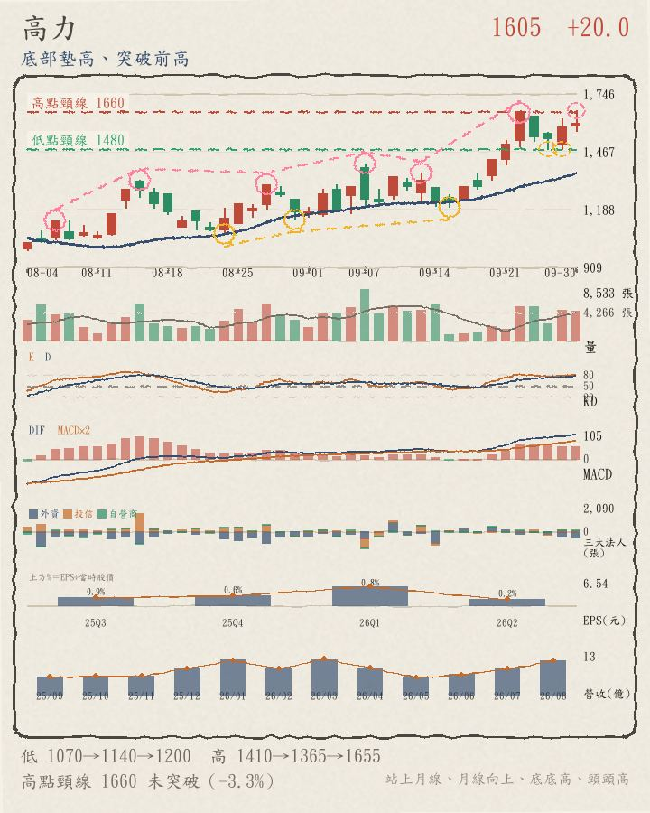
今天帶量收紅、站上月線 1363.5，離高點頸線 1660 還差 3.3%，轉折結構仍是底底高＋頭頭高。
- 月線位置：收盤 1605 在月線 1363.5 之上；5 日線 1583 也在月線之上（短均在上）；月線向上、5 日線向上
- 量能：成交量是 20 日均量的 1.21 倍，比 20 日均量大不少；收紅又量增，量價配合
- 關鍵價位：高點頸線 1660 還沒突破，差 3.3%；最近轉折高點 1655（低於 3.0%）；最近轉折低點 1200（高於 33.7%）
- 轉折結構：低點 1070、1140、1200 一路墊高 12.1%、高點 1410、1365、1655 也一路墊高 0.6%，是底底高＋頭頭高；還沒確認的轉折低點 09-24 1480、09-29 1480；還沒確認的轉折高點 09-30 1665（圖上虛線小圈）
區間或轉弱 成交金額 77.16 億・全榜第 32 名（上市第 27 名）
好條件 0/8：無
不好條件 4/8：相對大盤弱、在月線之下、外資賣超、月線下彎
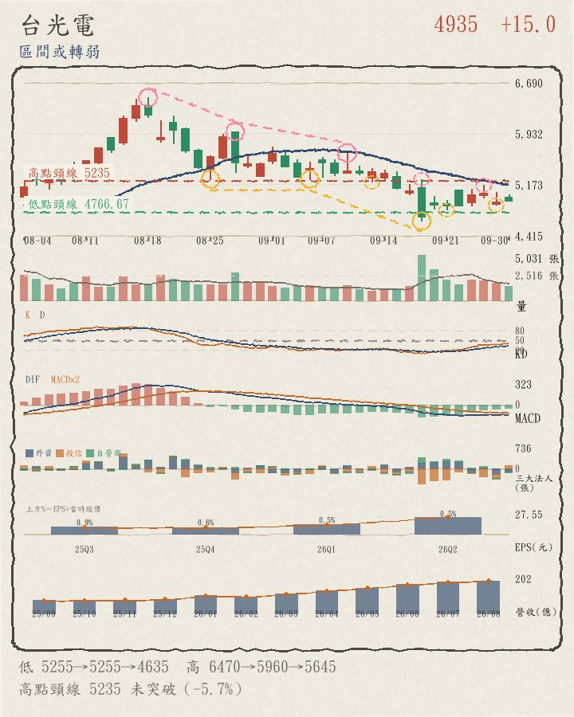
今天收紅、但成交量比平均少、跌破月線 5177.5，離高點頸線 5235 還差 5.7%，轉折還沒走出明顯方向。
- 月線位置：收盤 4935 在月線 5177.5 之下；5 日線 4957 也在月線之下（短均在下）；月線走平或向下、5 日線向上
- 量能：成交量是 20 日均量的 0.83 倍，比 20 日均量少很多；收紅但量縮，量價背離
- 關鍵價位：高點頸線 5235 還沒突破，差 5.7%；最近轉折高點 5645（低於 12.6%）；最近轉折低點 4635（高於 6.5%）
- 轉折結構：低點 5255、5255、4635 與高點 6470、5960、5645 都沒有明顯遞增，屬於區間震盪或轉弱；還沒確認的轉折低點 09-21 4795、09-29 4870；還沒確認的轉折高點 09-17 5255、09-24 5170（圖上虛線小圈）
底部墊高、突破前高 成交金額 72.95 億・全榜第 34 名（上市第 28 名）
好條件 5/8：站上月線、月線向上、底底高、頭頭高、突破頸線
不好條件 4/8：今日下跌、相對大盤弱、量增下跌（出貨）、外資賣超
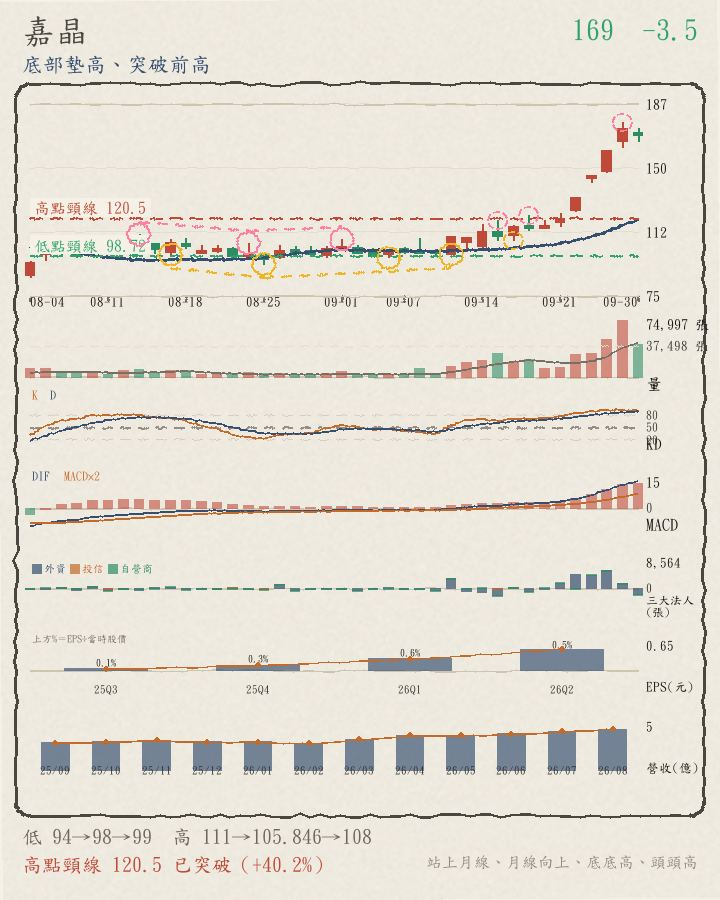
今天帶量收黑、站上月線 119.74，已站上高點頸線 120.5，轉折結構仍是底底高＋頭頭高。
- 月線位置：收盤 169 在月線 119.74 之上；5 日線 155.9 也在月線之上（短均在上）；月線向上、5 日線向上
- 量能：成交量是 20 日均量的 2.30 倍，比 20 日均量大不少；收黑卻量增，量價背離
- 關鍵價位：高點頸線 120.5 已站上；最近轉折高點 108（高於 56.5%）；最近轉折低點 99.3（高於 70.2%）
- 轉折結構：低點 93.7634、97.5、99.3 一路墊高 5.9%、高點 111、105.846、108 也一路墊高 63.0%，是底底高＋頭頭高；還沒確認的轉折低點 09-16 107.5；還沒確認的轉折高點 09-17 122、09-29 176（圖上虛線小圈）
高點墊高、底部不穩 成交金額 71.7 億・全榜第 35 名（上市第 29 名）
好條件 4/8：站上月線、月線向上、頭頭高、突破頸線
不好條件 2/8：相對大盤弱、外資賣超
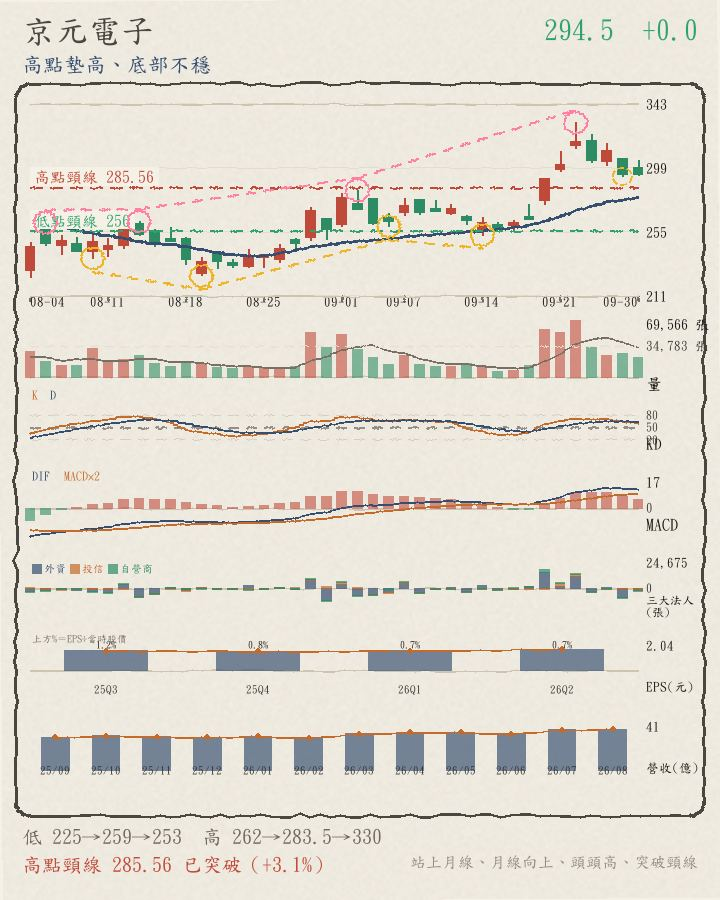
今天收黑、成交量也比平均少、站上月線 278.875，已站上高點頸線 285.56，高點還在墊高（但底部沒同步墊高）。
- 月線位置：收盤 294.5 在月線 278.875 之上；5 日線 304.2 也在月線之上（短均在上）；月線向上、5 日線向上
- 量能：成交量是 20 日均量的 0.86 倍，比 20 日均量少一些
- 關鍵價位：高點頸線 285.56 已站上；最近轉折高點 330（低於 10.8%）；最近轉折低點 253（高於 16.4%）
- 轉折結構：高點 262、283.5、330 墊高 26.0%（頭頭高），但低點 225、259、253 沒有同步墊高；還沒確認的轉折低點 09-29 293（圖上虛線小圈）
區間或轉弱 成交金額 69.08 億・全榜第 36 名（上市第 30 名）
好條件 3/8：站上月線、月線向上、外資買超
不好條件 1/8：相對大盤弱
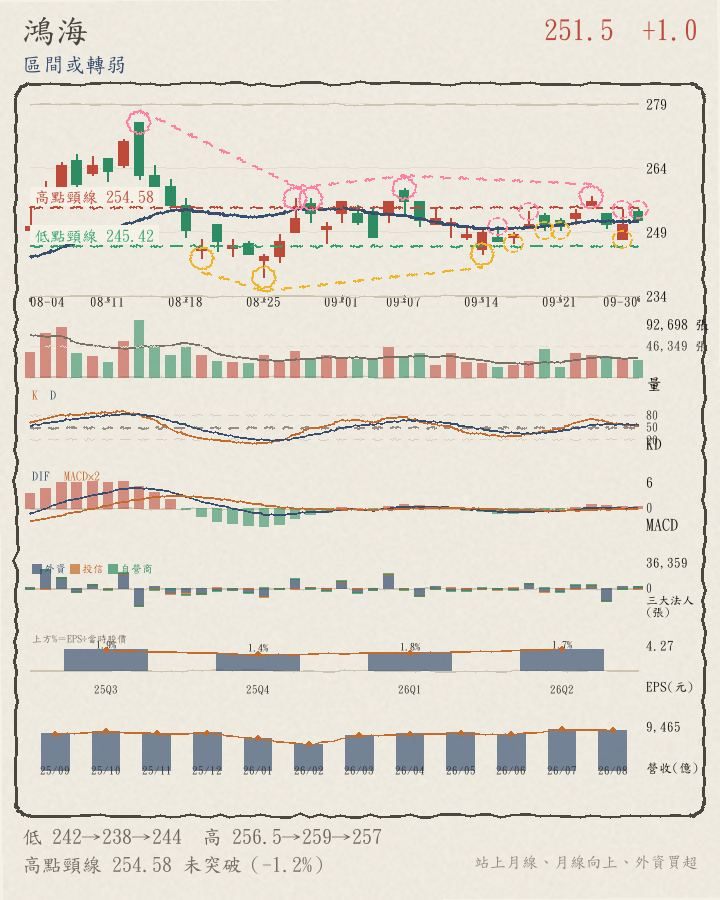
今天收紅、但成交量比平均少、站上月線 251.225，離高點頸線 254.58 還差 1.2%，轉折還沒走出明顯方向。
- 月線位置：收盤 251.5 在月線 251.225 之上；5 日線 252.3 也在月線之上（短均在上）；月線向上、5 日線向上
- 量能：成交量是 20 日均量的 0.90 倍，比 20 日均量少一些；收紅但量縮，量價背離
- 關鍵價位：高點頸線 254.58 還沒突破，差 1.2%；最近轉折高點 257（低於 2.1%）；最近轉折低點 243.5（高於 3.3%）
- 轉折結構：低點 242.5、238、243.5 與高點 256.5、259、257 都沒有明顯遞增，屬於區間震盪或轉弱；還沒確認的轉折低點 09-21 249、09-29 247；還沒確認的轉折高點 09-29 254、09-30 254（圖上虛線小圈）
底部墊高、突破前高 成交金額 68.46 億・全榜第 37 名（上市第 31 名）
好條件 7/8：站上月線、月線向上、底底高、頭頭高、相對大盤強、外資買超、量價攻擊（收紅＋大量）
不好條件 0/8：無
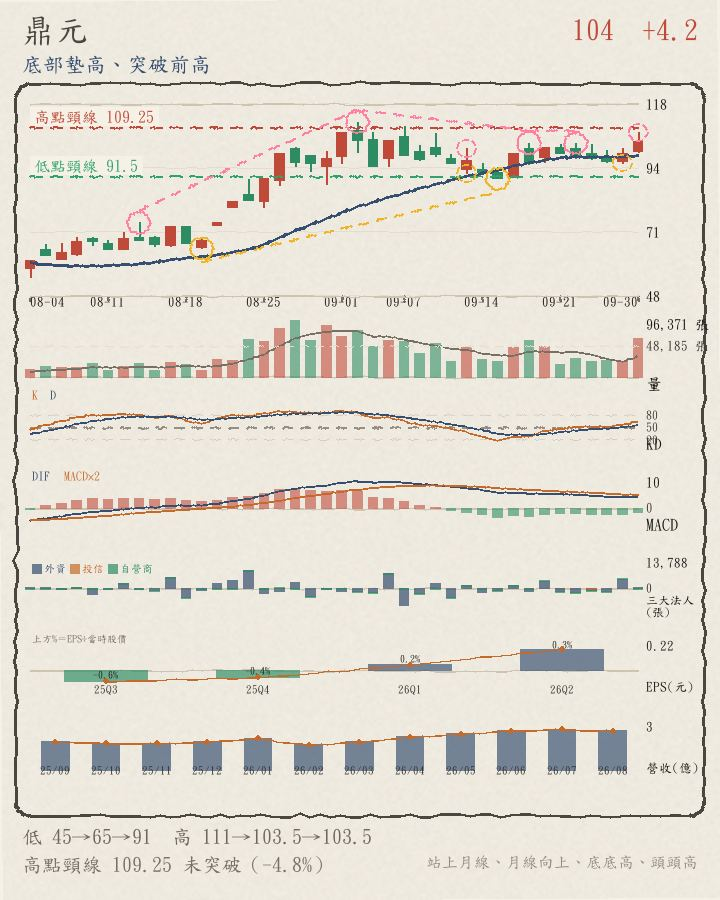
今天帶量收紅、站上月線 98.99，離高點頸線 109.25 還差 4.8%，轉折結構仍是底底高＋頭頭高。
- 月線位置：收盤 104 在月線 98.99 之上；5 日線 99.46 也在月線之上（短均在上）；月線向上、5 日線向上
- 量能：成交量是 20 日均量的 1.41 倍，比 20 日均量大不少；收紅又量增，量價配合
- 關鍵價位：高點頸線 109.25 還沒突破，差 4.8%；最近轉折高點 103.5（高於 0.5%）；最近轉折低點 90.6（高於 14.8%）
- 轉折結構：低點 45.3、65.2、90.6 一路墊高 100.0%、高點 111、103.5、103.5 也一路墊高 3.9%，是底底高＋頭頭高；還沒確認的轉折低點 09-11 92.4、09-29 96.3；還沒確認的轉折高點 09-11 101.5、09-30 107.5（圖上虛線小圈）
上升趨勢（底底高＋頭頭高） 成交金額 66.46 億・全榜第 38 名（上市第 32 名）
好條件 7/8：站上月線、月線向上、底底高、頭頭高、突破頸線、相對大盤強、量價攻擊（收紅＋大量）
不好條件 1/8：外資賣超
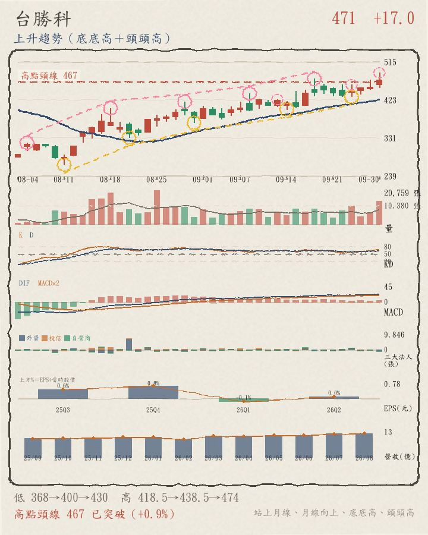
今天帶量收紅、站上月線 423.75，已站上高點頸線 467，轉折結構仍是底底高＋頭頭高。
- 月線位置：收盤 471 在月線 423.75 之上；5 日線 451.4 也在月線之上（短均在上）；月線向上、5 日線向上
- 量能：成交量是 20 日均量的 2.01 倍，比 20 日均量大不少；收紅又量增，量價配合
- 關鍵價位：高點頸線 467 已站上；最近轉折高點 474（低於 0.6%）；最近轉折低點 430.5（高於 9.4%）
- 轉折結構：低點 367.5、400、430.5 一路墊高 17.1%、高點 418.5、438.5、474 也一路墊高 13.3%，是底底高＋頭頭高；還沒確認的轉折高點 09-23 460、09-30 488.5（圖上虛線小圈）
區間或轉弱 成交金額 61.33 億・全榜第 41 名（上市第 33 名）
好條件 3/8：站上月線、月線向上、外資買超
不好條件 3/8：今日下跌、相對大盤弱、量增下跌（出貨）
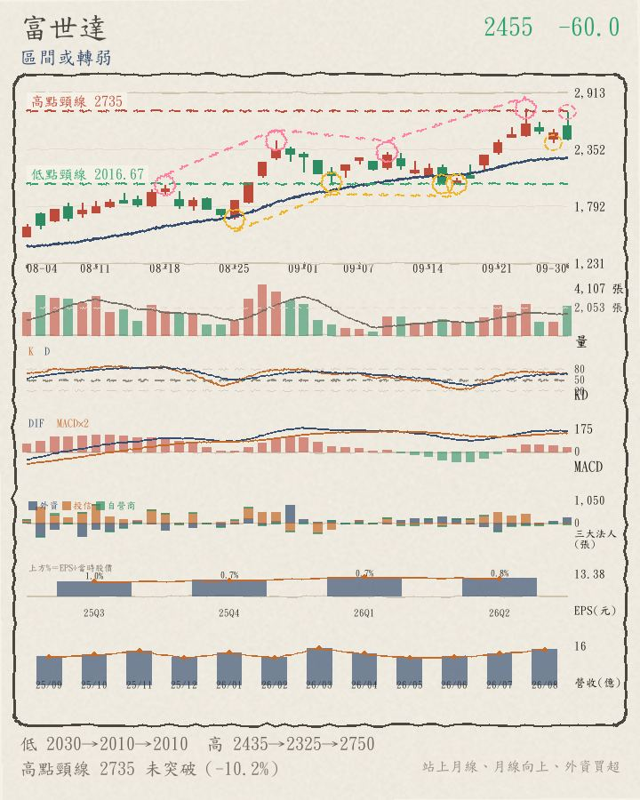
今天帶量收黑、站上月線 2269，離高點頸線 2735 還差 10.2%，轉折還沒走出明顯方向。
- 月線位置：收盤 2455 在月線 2269 之上；5 日線 2520 也在月線之上（短均在上）；月線向上、5 日線向上
- 量能：成交量是 20 日均量的 1.75 倍，比 20 日均量大不少；收黑卻量增，量價背離
- 關鍵價位：高點頸線 2735 還沒突破，差 10.2%；最近轉折高點 2750（低於 10.7%）；最近轉折低點 2010（高於 22.1%）
- 轉折結構：低點 2030、2010、2010 與高點 2435、2325、2750 都沒有明顯遞增，屬於區間震盪或轉弱；還沒確認的轉折低點 09-29 2420；還沒確認的轉折高點 09-30 2720（圖上虛線小圈）
上升趨勢（底底高＋頭頭高） 成交金額 59.29 億・全榜第 43 名（上市第 34 名）
好條件 4/8：月線向上、底底高、頭頭高、外資買超
不好條件 5/8：今日下跌、相對大盤弱、在月線之下、量增下跌（出貨）、收盤跌破前一日低點
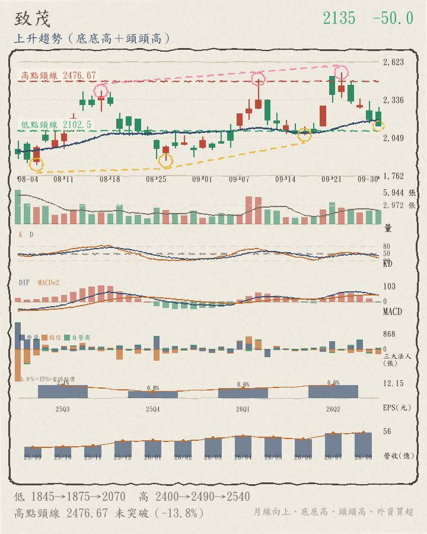
今天帶量收黑、跌破月線 2183，離高點頸線 2476.67 還差 13.8%，轉折結構仍是底底高＋頭頭高。
- 月線位置：收盤 2135 在月線 2183 之下；5 日線 2276 也在月線之上（短均在上）；月線向上、5 日線向上
- 量能：成交量是 20 日均量的 1.08 倍，比 20 日均量大一些；收黑卻量增，量價背離
- 關鍵價位：高點頸線 2476.67 還沒突破，差 13.8%；最近轉折高點 2540（低於 15.9%）；最近轉折低點 2070（高於 3.1%）
- 轉折結構：低點 1845、1875、2070 一路墊高 12.2%、高點 2400、2490、2540 也一路墊高 5.8%，是底底高＋頭頭高；還沒確認的轉折低點 09-30 2135（圖上虛線小圈）
剛突破前高 成交金額 58.79 億・全榜第 44 名（上市第 35 名）
好條件 7/8：站上月線、月線向上、頭頭高、突破頸線、相對大盤強、外資買超、量價攻擊（收紅＋大量）
不好條件 0/8：無
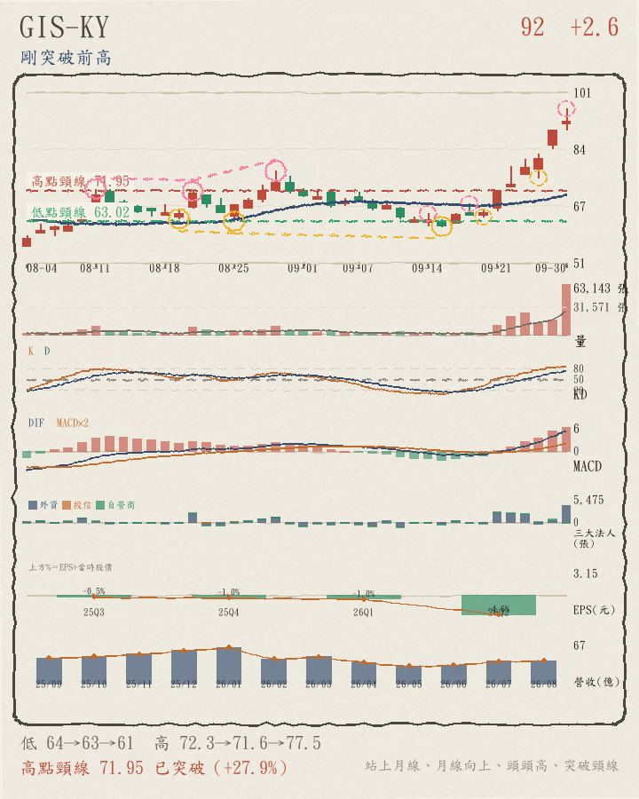
今天帶量收紅、站上月線 70.715，已站上高點頸線 71.95，高點還在墊高（但底部沒同步墊高）。
- 月線位置：收盤 92 在月線 70.715 之上；5 日線 82.98 也在月線之上（短均在上）；月線向上、5 日線向上
- 量能：成交量是 20 日均量的 9.33 倍，比 20 日均量大不少；收紅又量增，量價配合
- 關鍵價位：高點頸線 71.95 已站上；最近轉折高點 77.5（高於 18.7%）；最近轉折低點 61.4（高於 49.8%）
- 轉折結構：高點 72.3、71.6、77.5 墊高 23.5%（頭頭高），但低點 63.6、62.9、61.4 沒有同步墊高；還沒確認的轉折低點 09-18 64.2、09-24 75.6；還沒確認的轉折高點 09-17 68、09-30 95.7（圖上虛線小圈）
剛突破前高 成交金額 56.97 億・全榜第 45 名（上市第 36 名）
好條件 7/8：站上月線、月線向上、頭頭高、突破頸線、相對大盤強、外資買超、量價攻擊（收紅＋大量）
不好條件 0/8：無
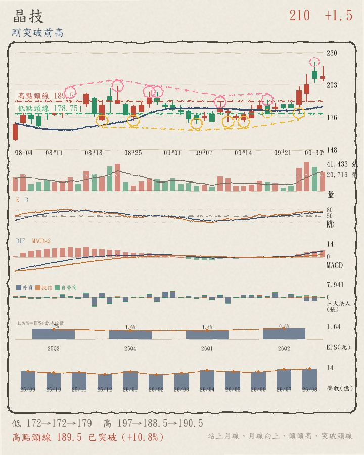
今天帶量收紅、站上月線 184.65，已站上高點頸線 189.5，高點還在墊高（但底部沒同步墊高）。
- 月線位置：收盤 210 在月線 184.65 之上；5 日線 200.6 也在月線之上（短均在上）；月線向上、5 日線向上
- 量能：成交量是 20 日均量的 1.90 倍，比 20 日均量大不少；收紅又量增，量價配合
- 關鍵價位：高點頸線 189.5 已站上；最近轉折高點 190.5（高於 10.2%）；最近轉折低點 179（高於 17.3%）
- 轉折結構：高點 197、188.5、190.5 墊高 16.8%（頭頭高），但低點 171.5、171.5、179 沒有同步墊高；還沒確認的轉折低點 09-17 178.5；還沒確認的轉折高點 09-29 222.5（圖上虛線小圈）
區間或轉弱 成交金額 55.5 億・全榜第 46 名（上市第 37 名）
好條件 5/8：站上月線、月線向上、相對大盤強、外資買超、量價攻擊（收紅＋大量）
不好條件 0/8：無
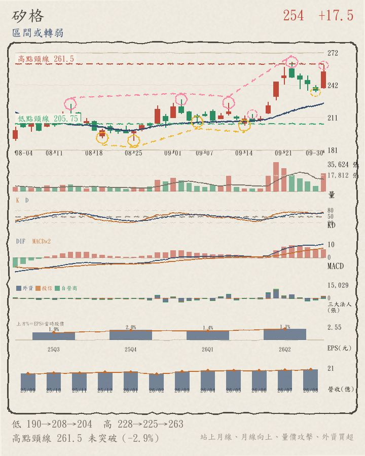
今天帶量收紅、站上月線 224.825，離高點頸線 261.5 還差 2.9%，轉折還沒走出明顯方向。
- 月線位置：收盤 254 在月線 224.825 之上；5 日線 245.9 也在月線之上（短均在上）；月線向上、5 日線向上
- 量能：成交量是 20 日均量的 1.83 倍，比 20 日均量大不少；收紅又量增，量價配合
- 關鍵價位：高點頸線 261.5 還沒突破，差 2.9%；最近轉折高點 263（低於 3.4%）；最近轉折低點 204（高於 24.5%）
- 轉折結構：低點 190、207.5、204 與高點 228、225、263 都沒有明顯遞增，屬於區間震盪或轉弱；還沒確認的轉折低點 09-29 235；還沒確認的轉折高點 09-15 214.5、09-30 260（圖上虛線小圈）
底部墊高、未過前高 成交金額 54.6 億・全榜第 47 名（上市第 38 名）
好條件 2/8：月線向上、底底高
不好條件 4/8：今日下跌、相對大盤弱、在月線之下、外資賣超
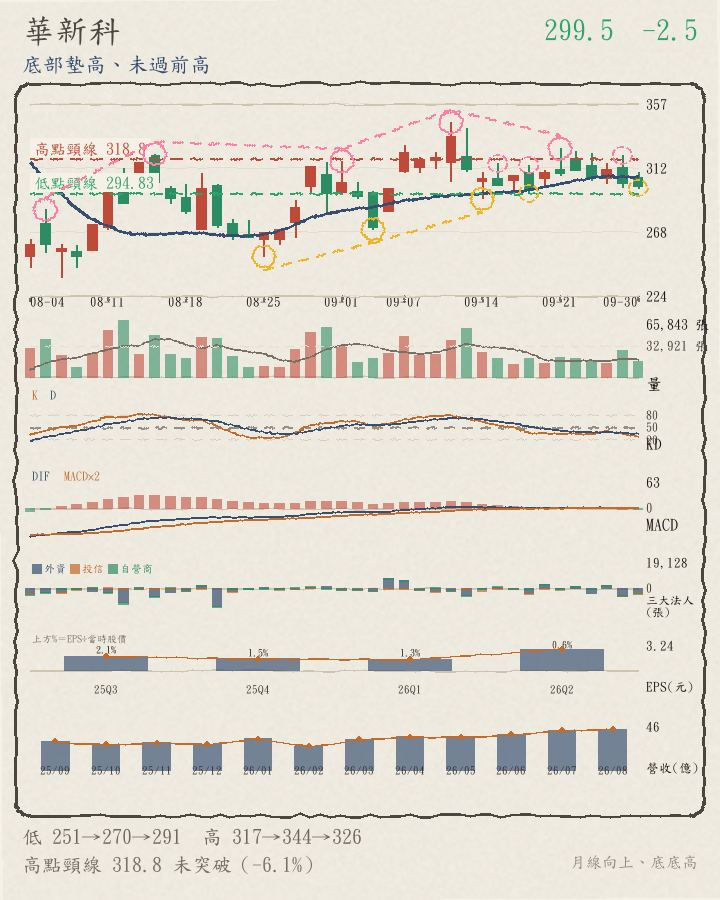
今天收黑、成交量也比平均少、跌破月線 306.5，離高點頸線 318.8 還差 6.1%，底部還在墊高（但高點沒同步創高）。
- 月線位置：收盤 299.5 在月線 306.5 之下；5 日線 306 也在月線之下（短均在下）；月線向上、5 日線向上
- 量能：成交量是 20 日均量的 0.64 倍，比 20 日均量少很多
- 關鍵價位：高點頸線 318.8 還沒突破，差 6.1%；最近轉折高點 326（低於 8.1%）；最近轉折低點 291（高於 2.9%）
- 轉折結構：低點 251、270、291 墊高 15.9%（底底高），但高點 317、344、326 沒有同步創高；還沒確認的轉折低點 09-17 295、09-30 298.5；還沒確認的轉折高點 09-17 314.5、09-29 321（圖上虛線小圈）
上升趨勢（底底高＋頭頭高） 成交金額 53.48 億・全榜第 48 名（上市第 39 名）
好條件 7/8：站上月線、月線向上、底底高、頭頭高、突破頸線、相對大盤強、外資買超
不好條件 0/8：無
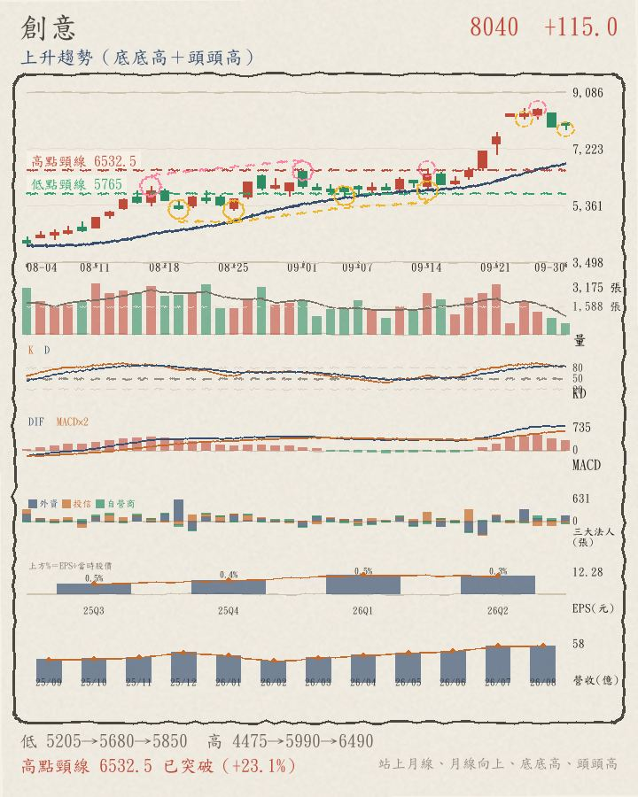
今天收紅、但成交量比平均少、站上月線 6739.25，已站上高點頸線 6532.5，轉折結構仍是底底高＋頭頭高。
- 月線位置：收盤 8040 在月線 6739.25 之上；5 日線 8250 也在月線之上（短均在上）；月線向上、5 日線向上
- 量能：成交量是 20 日均量的 0.39 倍，比 20 日均量少很多；收紅但量縮，量價背離
- 關鍵價位：高點頸線 6532.5 已站上；最近轉折高點 6490（高於 23.9%）；最近轉折低點 5850（高於 37.4%）
- 轉折結構：低點 5205、5680、5850 一路墊高 12.4%、高點 4475、5990、6490 也一路墊高 45.0%，是底底高＋頭頭高；還沒確認的轉折低點 09-23 8200、09-30 7860；還沒確認的轉折高點 09-14 6575、09-24 8545（圖上虛線小圈）
區間或轉弱 成交金額 51.16 億・全榜第 49 名（上市第 40 名）
好條件 0/8：無
不好條件 7/8：跌破前低、今日下跌、相對大盤弱、在月線之下、外資賣超、月線下彎、收盤跌破前一日低點
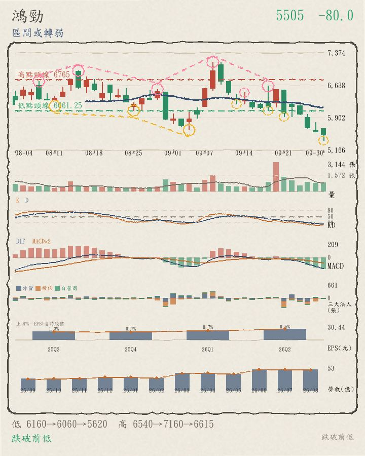
今天收黑、成交量也比平均少、跌破月線 6130，跌破前一個轉折低點（高點頸線 6765 還在收盤上方），轉折還沒走出明顯方向。
- 月線位置：收盤 5505 在月線 6130 之下；5 日線 5778 也在月線之下（短均在下）；月線走平或向下、5 日線走平或向下
- 量能：成交量是 20 日均量的 0.94 倍，比 20 日均量少一些
- 關鍵價位：高點頸線 6765 還沒突破、還在收盤上方 18.6%；最近轉折高點 6615（低於 16.8%）；最近轉折低點 5620（低於 2.0%）
- 轉折結構：低點 6160、6060、5620 與高點 6540、7160、6615 都沒有明顯遞增，屬於區間震盪或轉弱；還沒確認的轉折低點 09-21 5920、09-30 5380；還沒確認的轉折高點 09-14 6470（圖上虛線小圈）
上升趨勢（底底高＋頭頭高） 成交金額 50.52 億・全榜第 50 名（上市第 41 名）
好條件 4/8：站上月線、月線向上、底底高、頭頭高
不好條件 3/8：今日下跌、相對大盤弱、外資賣超
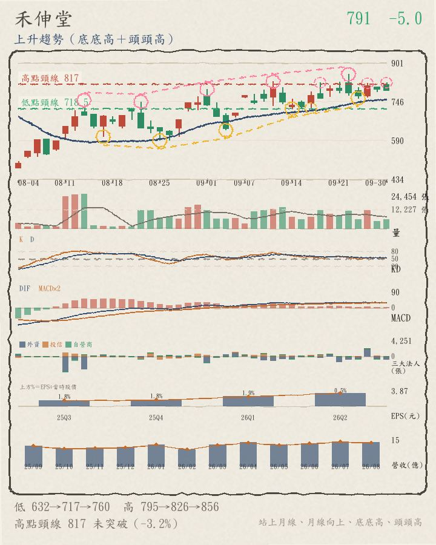
今天收黑、成交量也比平均少、站上月線 755.05，離高點頸線 817 還差 3.2%，轉折結構仍是底底高＋頭頭高。
- 月線位置：收盤 791 在月線 755.05 之上；5 日線 789 也在月線之上（短均在上）；月線向上、5 日線向上
- 量能：成交量是 20 日均量的 0.65 倍，比 20 日均量少很多
- 關鍵價位：高點頸線 817 還沒突破，差 3.2%；最近轉折高點 856（低於 7.6%）；最近轉折低點 760（高於 4.1%）
- 轉折結構：低點 632、717、760 一路墊高 20.3%、高點 795、826、856 也一路墊高 7.7%，是底底高＋頭頭高；還沒確認的轉折低點 09-16 720；還沒確認的轉折高點 09-24 820、09-30 822（圖上虛線小圈）
高點墊高、底部不穩 成交金額 49.21 億・全榜第 51 名（上市第 42 名）
好條件 3/8：站上月線、月線向上、頭頭高
不好條件 3/8：今日下跌、相對大盤弱、外資賣超
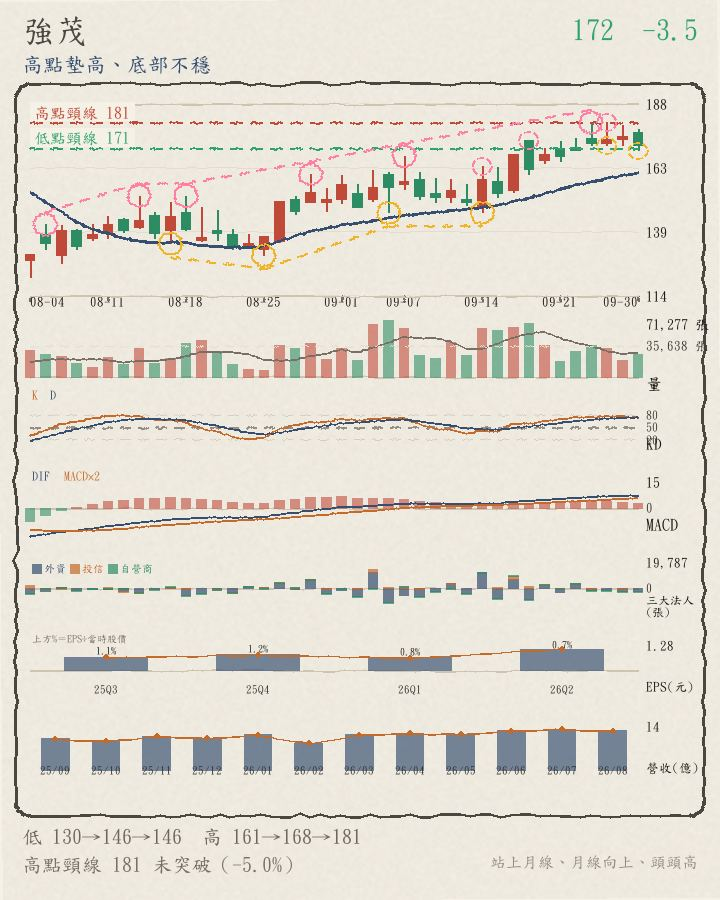
今天收黑、成交量也比平均少、站上月線 161.525，離高點頸線 181 還差 5.0%，高點還在墊高（但底部沒同步墊高）。
- 月線位置：收盤 172 在月線 161.525 之上；5 日線 173.2 也在月線之上（短均在上）；月線向上、5 日線向上
- 量能：成交量是 20 日均量的 0.69 倍，比 20 日均量少很多
- 關鍵價位：高點頸線 181 還沒突破，差 5.0%；最近轉折高點 181（低於 5.0%）；最近轉折低點 146（高於 17.8%）
- 轉折結構：高點 161、168、181 墊高 12.4%（頭頭高），但低點 129.5、146、146 沒有同步墊高；還沒確認的轉折低點 09-24 172、09-30 170；還沒確認的轉折高點 09-17 174、09-24 181（圖上虛線小圈）
區間或轉弱 成交金額 46.2 億・全榜第 53 名（上市第 43 名）
好條件 0/8：無
不好條件 5/8：今日下跌、相對大盤弱、在月線之下、外資賣超、月線下彎
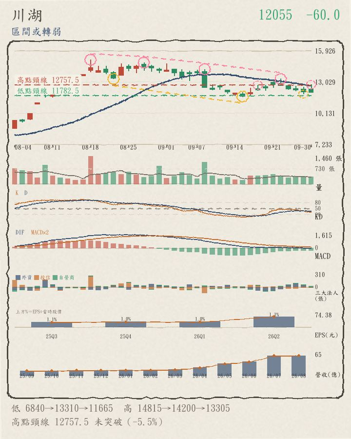
今天收黑、成交量也比平均少、跌破月線 12687.5，離高點頸線 12757.5 還差 5.5%，轉折還沒走出明顯方向。
- 月線位置：收盤 12055 在月線 12687.5 之下；5 日線 12316 也在月線之下（短均在下）；月線走平或向下、5 日線向上
- 量能：成交量是 20 日均量的 0.86 倍，比 20 日均量少一些
- 關鍵價位：高點頸線 12757.5 還沒突破，差 5.5%；最近轉折高點 13305（低於 9.4%）；最近轉折低點 11665（高於 3.3%）
- 轉折結構：低點 6840、13310、11665 與高點 14815、14200、13305 都沒有明顯遞增，屬於區間震盪或轉弱；還沒確認的轉折低點 09-29 11900；還沒確認的轉折高點 09-17 12730、09-30 12785（圖上虛線小圈）
剛突破前高 成交金額 45.94 億・全榜第 54 名（上市第 44 名）
好條件 5/8：站上月線、月線向上、頭頭高、相對大盤強、量價攻擊（收紅＋大量）
不好條件 1/8：外資賣超
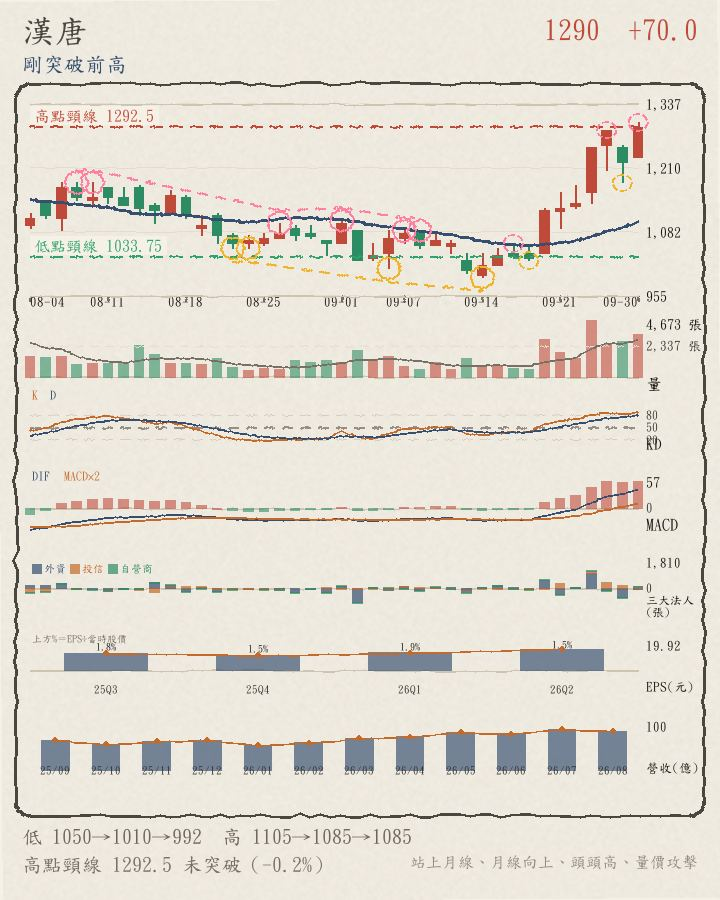
今天帶量收紅、站上月線 1102.5，離高點頸線 1292.5 還差 0.2%，高點還在墊高（但底部沒同步墊高）。
- 月線位置：收盤 1290 在月線 1102.5 之上；5 日線 1237 也在月線之上（短均在上）；月線向上、5 日線向上
- 量能：成交量是 20 日均量的 2.16 倍，比 20 日均量大不少；收紅又量增，量價配合
- 關鍵價位：高點頸線 1292.5 還沒突破，差 0.2%；最近轉折高點 1085（高於 18.9%）；最近轉折低點 992（高於 30.0%）
- 轉折結構：高點 1105、1085、1085 墊高 19.8%（頭頭高），但低點 1050、1010、992 沒有同步墊高；還沒確認的轉折低點 09-17 1025、09-29 1180；還沒確認的轉折高點 09-24 1285、09-30 1300（圖上虛線小圈）
區間或轉弱 成交金額 42.38 億・全榜第 57 名（上市第 45 名）
好條件 2/8：相對大盤強、外資買超
不好條件 2/8：在月線之下、月線下彎
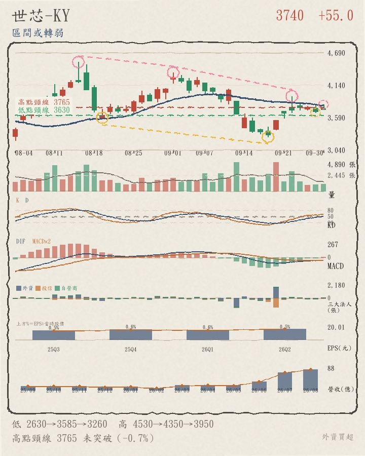
今天收紅、但成交量比平均少、跌破月線 3794.25，離高點頸線 3765 還差 0.7%，轉折還沒走出明顯方向。
- 月線位置：收盤 3740 在月線 3794.25 之下；5 日線 3734 也在月線之下（短均在下）；月線走平或向下、5 日線向上
- 量能：成交量是 20 日均量的 0.49 倍，比 20 日均量少很多；收紅但量縮，量價背離
- 關鍵價位：高點頸線 3765 還沒突破，差 0.7%；最近轉折高點 3950（低於 5.3%）；最近轉折低點 3260（高於 14.7%）
- 轉折結構：低點 2630、3585、3260 與高點 4530、4350、3950 都沒有明顯遞增，屬於區間震盪或轉弱；還沒確認的轉折低點 09-29 3675；還沒確認的轉折高點 09-30 3810（圖上虛線小圈）
剛突破前高 成交金額 42.23 億・全榜第 58 名（上市第 46 名）
好條件 5/8：站上月線、月線向上、頭頭高、相對大盤強、量價攻擊（收紅＋大量）
不好條件 1/8：外資賣超
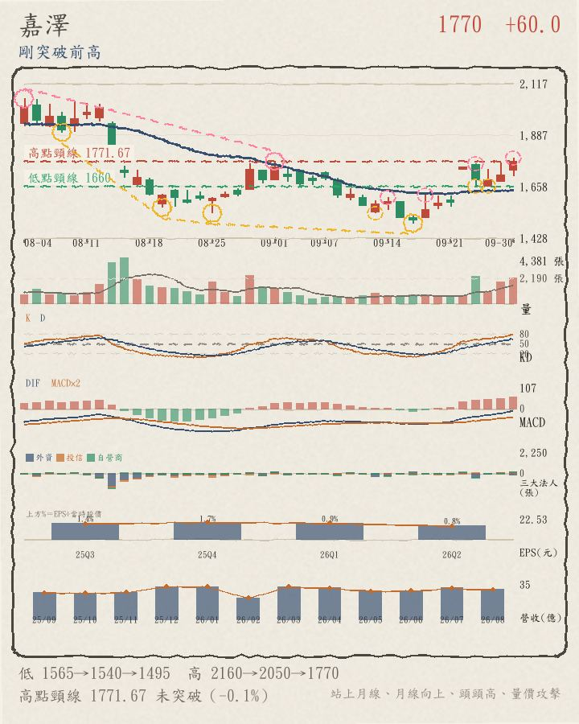
今天帶量收紅、站上月線 1642.75，離高點頸線 1771.67 還差 0.1%，高點還在墊高（但底部沒同步墊高）。
- 月線位置：收盤 1770 在月線 1642.75 之上；5 日線 1721 也在月線之上（短均在上）；月線向上、5 日線向上
- 量能：成交量是 20 日均量的 2.47 倍，比 20 日均量大不少；收紅又量增，量價配合
- 關鍵價位：高點頸線 1771.67 還沒突破，差 0.1%；最近轉折高點 1770（高於 0.0%）；最近轉折低點 1495（高於 18.4%）
- 轉折結構：高點 2160、2050、1770 墊高 0.8%（頭頭高），但低點 1565、1540、1495 沒有同步墊高；還沒確認的轉折低點 09-23 1660、09-24 1660；還沒確認的轉折高點 09-23 1760、09-30 1785（圖上虛線小圈）
區間或轉弱 成交金額 42.07 億・全榜第 59 名（上市第 47 名）
好條件 5/8：站上月線、月線向上、相對大盤強、外資買超、量價攻擊（收紅＋大量）
不好條件 0/8：無
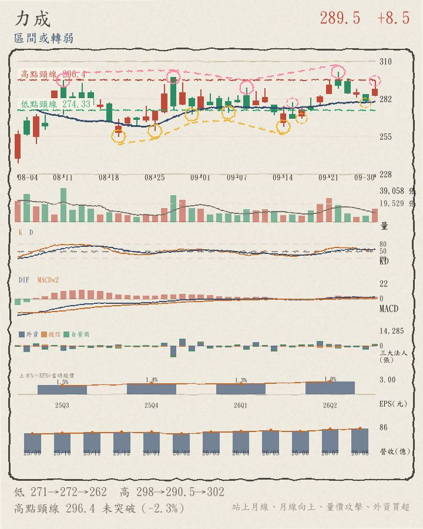
今天帶量收紅、站上月線 280.375，離高點頸線 296.4 還差 2.3%，轉折還沒走出明顯方向。
- 月線位置：收盤 289.5 在月線 280.375 之上；5 日線 287.2 也在月線之上（短均在上）；月線向上、5 日線向上
- 量能：成交量是 20 日均量的 1.22 倍，比 20 日均量大不少；收紅又量增，量價配合
- 關鍵價位：高點頸線 296.4 還沒突破，差 2.3%；最近轉折高點 302（低於 4.1%）；最近轉折低點 262（高於 10.5%）
- 轉折結構：低點 271、272.5、262 與高點 298、290.5、302 都沒有明顯遞增，屬於區間震盪或轉弱；還沒確認的轉折低點 09-16 268、09-29 279.5；還沒確認的轉折高點 09-15 279.5、09-30 295.5（圖上虛線小圈）
區間或轉弱 成交金額 40.5 億・全榜第 61 名（上市第 48 名）
好條件 1/8：月線向上
不好條件 5/8：今日下跌、相對大盤弱、在月線之下、外資賣超、收盤跌破前一日低點
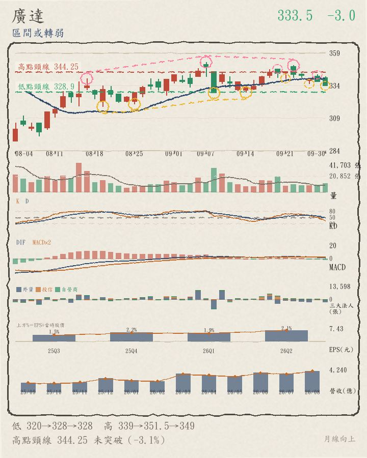
今天收黑、成交量也比平均少、跌破月線 338.925，離高點頸線 344.25 還差 3.1%，轉折還沒走出明顯方向。
- 月線位置：收盤 333.5 在月線 338.925 之下；5 日線 338.4 也在月線之下（短均在下）；月線向上、5 日線走平或向下
- 量能：成交量是 20 日均量的 0.85 倍，比 20 日均量少一些
- 關鍵價位：高點頸線 344.25 還沒突破，差 3.1%；最近轉折高點 349（低於 4.4%）；最近轉折低點 328.5（高於 1.5%）
- 轉折結構：低點 319.5、328、328.5 與高點 339、351.5、349 都沒有明顯遞增，屬於區間震盪或轉弱；還沒確認的轉折低點 09-24 335、09-30 333.5；還沒確認的轉折高點 09-18 346.5、09-29 342（圖上虛線小圈）
區間或轉弱 成交金額 40.15 億・全榜第 62 名（上市第 49 名）
好條件 0/8：無
不好條件 8/8：跌破前低、今日下跌、相對大盤弱、在月線之下、量增下跌（出貨）、外資賣超、月線下彎、收盤跌破前一日低點
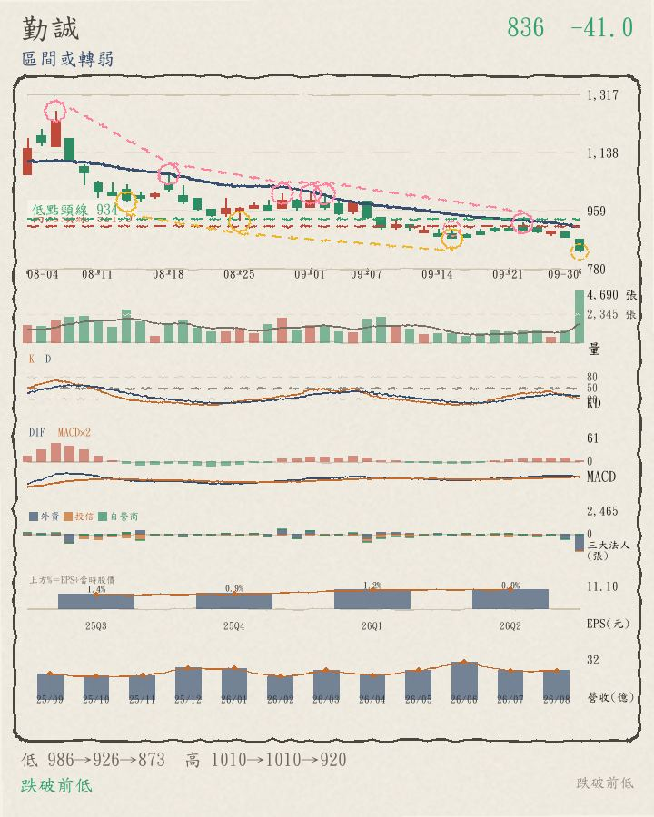
今天帶量收黑、跌破月線 909.9，跌破前一個轉折低點（高點頸線 911.5 還在收盤上方），轉折還沒走出明顯方向。
- 月線位置：收盤 836 在月線 909.9 之下；5 日線 880 也在月線之下（短均在下）；月線走平或向下、5 日線走平或向下
- 量能：成交量是 20 日均量的 4.26 倍，比 20 日均量大不少；收黑卻量增，量價背離
- 關鍵價位：高點頸線 911.5 還沒突破、還在收盤上方 8.3%；最近轉折高點 920（低於 9.1%）；最近轉折低點 873（低於 4.2%）
- 轉折結構：低點 986、926、873 與高點 1010、1010、920 都沒有明顯遞增，屬於區間震盪或轉弱；還沒確認的轉折低點 09-30 832；還沒確認的轉折高點 09-15 903（圖上虛線小圈）
上升趨勢（底底高＋頭頭高） 成交金額 39.81 億・全榜第 63 名（上市第 50 名）
好條件 2/8：底底高、頭頭高
不好條件 5/8：今日下跌、相對大盤弱、在月線之下、外資賣超、月線下彎
今天收黑、成交量也比平均少、跌破月線 2288.75，離高點頸線 2143.55 還差 2.5%，轉折結構仍是底底高＋頭頭高。
- 月線位置：收盤 2090 在月線 2288.75 之下；5 日線 2105 也在月線之下（短均在下）；月線走平或向下、5 日線走平或向下
- 量能：成交量是 20 日均量的 0.46 倍，比 20 日均量少很多
- 關鍵價位：高點頸線 2143.55 還沒突破，差 2.5%；最近轉折高點 2875（低於 27.3%）；最近轉折低點 2085（高於 0.2%）
- 轉折結構：低點 1962.92、2053.44、2085 一路墊高 6.2%、高點 2145.64、2259.63、2875 也一路墊高 34.0%，是底底高＋頭頭高；還沒確認的轉折低點 09-22 2090、09-24 2075；還沒確認的轉折高點 09-24 2140、09-30 2145（圖上虛線小圈）
剛突破前高 成交金額 219.95 億・全榜第 6 名（上櫃第 1 名）
好條件 7/8：站上月線、月線向上、頭頭高、突破頸線、相對大盤強、外資買超、量價攻擊（收紅＋大量）
不好條件 0/8：無
今天帶量收紅、站上月線 473.975，已站上高點頸線 512.5，高點還在墊高（但底部沒同步墊高）。
- 月線位置：收盤 542 在月線 473.975 之上；5 日線 507 也在月線之上（短均在上）；月線向上、5 日線向上
- 量能：成交量是 20 日均量的 1.44 倍，比 20 日均量大不少；收紅又量增，量價配合
- 關鍵價位：高點頸線 512.5 已站上；最近轉折高點 478（高於 13.4%）；最近轉折低點 420（高於 29.0%）
- 轉折結構：高點 492、492、478 墊高 13.4%（頭頭高），但低點 349.5、438.5、420 沒有同步墊高；還沒確認的轉折低點 09-18 467、09-24 482；還沒確認的轉折高點 09-23 518、09-30 542（圖上虛線小圈）
高點墊高、底部不穩 成交金額 198.78 億・全榜第 10 名（上櫃第 2 名）
好條件 7/8：站上月線、月線向上、頭頭高、突破頸線、相對大盤強、外資買超、量價攻擊（收紅＋大量）
不好條件 0/8：無
今天帶量收紅、站上月線 112.875，已站上高點頸線 125，高點還在墊高（但底部沒同步墊高）。
- 月線位置：收盤 133 在月線 112.875 之上；5 日線 121.8 也在月線之上（短均在上）；月線向上、5 日線向上
- 量能：成交量是 20 日均量的 2.98 倍，比 20 日均量大不少；收紅又量增，量價配合
- 關鍵價位：高點頸線 125 已站上；最近轉折高點 125（高於 6.4%）；最近轉折低點 100（高於 33.0%）
- 轉折結構：高點 117.5、119、125 墊高 6.4%（頭頭高），但低點 103.5、104、100 沒有同步墊高；還沒確認的轉折低點 09-23 114.5、09-24 114.5；還沒確認的轉折高點 09-23 125、09-30 133（圖上虛線小圈）
剛突破前高 成交金額 176.66 億・全榜第 11 名（上櫃第 3 名）
好條件 7/8：站上月線、月線向上、頭頭高、突破頸線、相對大盤強、外資買超、量價攻擊（收紅＋大量）
不好條件 0/8：無
今天帶量收紅、站上月線 947.8，已站上高點頸線 1010.4，高點還在墊高（但底部沒同步墊高）。
- 月線位置：收盤 1035 在月線 947.8 之上；5 日線 969.8 也在月線之上（短均在上）；月線向上、5 日線向上
- 量能：成交量是 20 日均量的 1.95 倍，比 20 日均量大不少；收紅又量增，量價配合
- 關鍵價位：高點頸線 1010.4 已站上；最近轉折高點 1010（高於 2.5%）；最近轉折低點 872（高於 18.7%）
- 轉折結構：高點 1015、1015、1010 墊高 2.5%（頭頭高），但低點 931、875、872 沒有同步墊高；還沒確認的轉折低點 09-23 922、09-29 930；還沒確認的轉折高點 09-17 977、09-30 1035（圖上虛線小圈）
剛突破前高 成交金額 90.32 億・全榜第 27 名（上櫃第 4 名）
好條件 5/8：站上月線、月線向上、頭頭高、相對大盤強、外資買超
不好條件 0/8：無
今天收紅、但成交量比平均少、站上月線 1405.5，離高點頸線 1530 還差 0.7%，高點還在墊高（但底部沒同步墊高）。
- 月線位置：收盤 1520 在月線 1405.5 之上；5 日線 1480 也在月線之上（短均在上）；月線向上、5 日線向上
- 量能：成交量是 20 日均量的 0.84 倍，比 20 日均量少很多；收紅但量縮，量價背離
- 關鍵價位：高點頸線 1530 還沒突破，差 0.7%；最近轉折高點 1460（高於 4.1%）；最近轉折低點 1275（高於 19.2%）
- 轉折結構：高點 1565、1430、1460 墊高 6.2%（頭頭高），但低點 1395、1295、1275 沒有同步墊高；還沒確認的轉折低點 09-14 1320、09-29 1465；還沒確認的轉折高點 09-24 1530、09-30 1550（圖上虛線小圈）
底部墊高、突破前高 成交金額 85.64 億・全榜第 30 名（上櫃第 5 名）
好條件 5/8：站上月線、月線向上、底底高、頭頭高、突破頸線
不好條件 3/8：相對大盤弱、量增下跌（出貨）、外資賣超
今天帶量收黑、站上月線 2796.5，已站上高點頸線 2797.5，轉折結構仍是底底高＋頭頭高。
- 月線位置：收盤 3305 在月線 2796.5 之上；5 日線 3251 也在月線之上（短均在上）；月線向上、5 日線向上
- 量能：成交量是 20 日均量的 1.49 倍，比 20 日均量大不少；收黑卻量增，量價背離
- 關鍵價位：高點頸線 2797.5 已站上；最近轉折高點 2875（高於 15.0%）；最近轉折低點 2530（高於 30.6%）
- 轉折結構：低點 1995、2090、2530 一路墊高 26.8%、高點 2825、2720、2875 也一路墊高 26.4%，是底底高＋頭頭高；還沒確認的轉折低點 09-29 3145；還沒確認的轉折高點 09-23 3350、09-30 3635（圖上虛線小圈）
剛突破前高 成交金額 73.53 億・全榜第 33 名（上櫃第 6 名）
好條件 7/8：站上月線、月線向上、頭頭高、突破頸線、相對大盤強、外資買超、量價攻擊（收紅＋大量）
不好條件 0/8：無
今天帶量收紅、站上月線 183.9，已站上高點頸線 204.75，高點還在墊高（但底部沒同步墊高）。
- 月線位置：收盤 207.5 在月線 183.9 之上；5 日線 192.9 也在月線之上（短均在上）；月線向上、5 日線向上
- 量能：成交量是 20 日均量的 2.60 倍，比 20 日均量大不少；收紅又量增，量價配合
- 關鍵價位：高點頸線 204.75 已站上；最近轉折高點 202（高於 2.7%）；最近轉折低點 170（高於 22.1%）
- 轉折結構：高點 187.5、187.5、202 墊高 2.7%（頭頭高），但低點 173.5、173、170 沒有同步墊高；還沒確認的轉折低點 09-18 180.5、09-24 181.5；還沒確認的轉折高點 09-17 191.5、09-30 207.5（圖上虛線小圈）
剛突破前高 成交金額 66.03 億・全榜第 39 名（上櫃第 7 名）
好條件 2/8：站上月線、頭頭高
不好條件 4/8：相對大盤弱、量增下跌（出貨）、外資賣超、月線下彎
今天帶量收黑、站上月線 1276.25，離高點頸線 1436.67 還差 8.8%，高點還在墊高（但底部沒同步墊高）。
- 月線位置：收盤 1310 在月線 1276.25 之上；5 日線 1247 也在月線之下（短均在下）；月線走平或向下、5 日線向上
- 量能：成交量是 20 日均量的 2.57 倍，比 20 日均量大不少；收黑卻量增，量價背離
- 關鍵價位：高點頸線 1436.67 還沒突破，差 8.8%；最近轉折高點 1270（高於 3.1%）；最近轉折低點 1180（高於 11.0%）
- 轉折結構：高點 1455、1435、1270 墊高 11.8%（頭頭高），但低點 1280、1185、1180 沒有同步墊高；還沒確認的轉折低點 09-21 1200、09-24 1180；還沒確認的轉折高點 09-22 1270、09-30 1420（圖上虛線小圈）
剛突破前高 成交金額 64.24 億・全榜第 40 名（上櫃第 8 名）
好條件 4/8：站上月線、月線向上、頭頭高、突破頸線
不好條件 4/8：今日下跌、相對大盤弱、外資賣超、收盤跌破前一日低點
今天收黑、站上月線 1449.25，已站上高點頸線 1080，高點還在墊高（但底部沒同步墊高）。
- 月線位置：收盤 1530 在月線 1449.25 之上；5 日線 1613 也在月線之上（短均在上）；月線向上、5 日線向上
- 量能：成交量是 20 日均量的 1.00 倍，跟 20 日均量差不多
- 關鍵價位：高點頸線 1080 已站上；最近轉折高點 1505（高於 1.7%）；最近轉折低點 1240（高於 23.4%）
- 轉折結構：高點 1080、1080、1505 墊高 16.3%（頭頭高），但低點 955、1300、1240 沒有同步墊高；還沒確認的轉折低點 09-30 1530；還沒確認的轉折高點 09-22 1630、09-24 1750（圖上虛線小圈）
區間或轉弱 成交金額 60.23 億・全榜第 42 名（上櫃第 9 名）
好條件 4/8：站上月線、月線向上、相對大盤強、外資買超
不好條件 0/8：無
今天收紅、但成交量比平均少、站上月線 2070.75，離高點頸線 2196.25 還差 2.1%，轉折還沒走出明顯方向。
- 月線位置：收盤 2150 在月線 2070.75 之上；5 日線 2158 也在月線之上（短均在上）；月線向上、5 日線向上
- 量能：成交量是 20 日均量的 0.73 倍，比 20 日均量少很多；收紅但量縮，量價背離
- 關鍵價位：高點頸線 2196.25 還沒突破，差 2.1%；最近轉折高點 2350（低於 8.5%）；最近轉折低點 1900（高於 13.2%）
- 轉折結構：低點 1905、1970、1900 與高點 2195、2160、2350 都沒有明顯遞增，屬於區間震盪或轉弱；還沒確認的轉折低點 09-29 2080；還沒確認的轉折高點 09-30 2215（圖上虛線小圈）
區間或轉弱 成交金額 46.36 億・全榜第 52 名（上櫃第 10 名）
好條件 2/8：月線向上、外資買超
不好條件 5/8：今日下跌、相對大盤弱、在月線之下、量增下跌（出貨）、收盤跌破前一日低點
今天帶量收黑、跌破月線 5458，離高點頸線 5726.67 還差 10.5%，轉折還沒走出明顯方向。
- 月線位置：收盤 5125 在月線 5458 之下；5 日線 5338 也在月線之下（短均在下）；月線向上、5 日線走平或向下
- 量能：成交量是 20 日均量的 1.08 倍，比 20 日均量大一些；收黑卻量增，量價背離
- 關鍵價位：高點頸線 5726.67 還沒突破，差 10.5%；最近轉折高點 5860（低於 12.5%）；最近轉折低點 5090（高於 0.7%）
- 轉折結構：低點 4730、5365、5090 與高點 5585、6060、5860 都沒有明顯遞增，屬於區間震盪或轉弱；還沒確認的轉折低點 09-17 5485、09-30 5100；還沒確認的轉折高點 09-21 5850、09-24 5625（圖上虛線小圈）
區間或轉弱 成交金額 44.12 億・全榜第 55 名（上櫃第 11 名）
好條件 3/8：站上月線、月線向上、突破頸線
不好條件 2/8：相對大盤弱、外資賣超
今天收紅、但成交量比平均少、站上月線 200.425，已站上高點頸線 203，轉折還沒走出明顯方向。
- 月線位置：收盤 209.5 在月線 200.425 之上；5 日線 213 也在月線之上（短均在上）；月線向上、5 日線走平或向下
- 量能：成交量是 20 日均量的 0.47 倍，比 20 日均量少很多；收紅但量縮，量價背離
- 關鍵價位：高點頸線 203 已站上；最近轉折高點 233（低於 10.1%）；最近轉折低點 171（高於 22.5%）
- 轉折結構：低點 155.5、152、171 與高點 203、203、233 都沒有明顯遞增，屬於區間震盪或轉弱；還沒確認的轉折低點 09-29 208；還沒確認的轉折高點 09-29 217（圖上虛線小圈）
高點墊高、底部不穩 成交金額 42.46 億・全榜第 56 名（上櫃第 12 名）
好條件 5/8：站上月線、月線向上、頭頭高、相對大盤強、量價攻擊（收紅＋大量）
不好條件 1/8：外資賣超
今天帶量收紅、站上月線 162，離高點頸線 183.25 還差 1.2%，高點還在墊高（但底部沒同步墊高）。
- 月線位置：收盤 181 在月線 162 之上；5 日線 175.2 也在月線之上（短均在上）；月線向上、5 日線向上
- 量能：成交量是 20 日均量的 1.56 倍，比 20 日均量大不少；收紅又量增，量價配合
- 關鍵價位：高點頸線 183.25 還沒突破，差 1.2%；最近轉折高點 163（高於 11.0%）；最近轉折低點 152.5（高於 18.7%）
- 轉折結構：高點 157、158、163 墊高 3.8%（頭頭高），但低點 146.5、147、152.5 沒有同步墊高；還沒確認的轉折低點 09-21 166.5、09-24 168；還沒確認的轉折高點 09-22 181.5、09-30 185（圖上虛線小圈）
底部墊高、未過前高 成交金額 41.13 億・全榜第 60 名（上櫃第 13 名）
好條件 2/8：月線向上、底底高
不好條件 5/8：今日下跌、相對大盤弱、在月線之下、外資賣超、收盤跌破前一日低點
今天收黑、成交量也比平均少、跌破月線 501.9，離高點頸線 528 還差 6.2%，底部還在墊高（但高點沒同步創高）。
- 月線位置：收盤 495 在月線 501.9 之下；5 日線 498.5 也在月線之下（短均在下）；月線向上、5 日線向上
- 量能：成交量是 20 日均量的 0.67 倍，比 20 日均量少很多
- 關鍵價位：高點頸線 528 還沒突破，差 6.2%；最近轉折高點 535（低於 7.5%）；最近轉折低點 477（高於 3.8%）
- 轉折結構：低點 399、469.5、477 墊高 19.5%（底底高），但高點 462、564、535 沒有同步創高；還沒確認的轉折低點 09-23 490、09-30 495；還沒確認的轉折高點 09-14 530、09-29 519（圖上虛線小圈）
高點墊高、底部不穩 成交金額 39.21 億・全榜第 64 名（上櫃第 14 名）
好條件 4/8：站上月線、月線向上、頭頭高、突破頸線
不好條件 4/8：今日下跌、相對大盤弱、外資賣超、收盤跌破前一日低點
今天收黑、成交量也比平均少、站上月線 18704.5，已站上高點頸線 18336.4，高點還在墊高（但底部沒同步墊高）。
- 月線位置：收盤 18750 在月線 18704.5 之上；5 日線 19833 也在月線之上（短均在上）；月線向上、5 日線向上
- 量能：成交量是 20 日均量的 0.80 倍，比 20 日均量少很多
- 關鍵價位：高點頸線 18336.4 已站上；最近轉折高點 21800（低於 14.0%）；最近轉折低點 17170（高於 9.2%）
- 轉折結構：高點 18600、19795、21800 墊高 17.2%（頭頭高），但低點 15930、14600、17170 沒有同步墊高；還沒確認的轉折低點 09-30 18680（圖上虛線小圈）
高點墊高、底部不穩 成交金額 37.23 億・全榜第 65 名（上櫃第 15 名）
好條件 6/8：站上月線、月線向上、頭頭高、突破頸線、相對大盤強、量價攻擊（收紅＋大量）
不好條件 1/8：外資賣超
今天帶量收紅、站上月線 240.375，已站上高點頸線 241.5，高點還在墊高（但底部沒同步墊高）。
- 月線位置：收盤 243.5 在月線 240.375 之上；5 日線 251.9 也在月線之上（短均在上）；月線向上、5 日線向上
- 量能：成交量是 20 日均量的 1.28 倍，比 20 日均量大不少；收紅又量增，量價配合
- 關鍵價位：高點頸線 241.5 已站上；最近轉折高點 289.5（低於 15.9%）；最近轉折低點 220（高於 10.7%）
- 轉折結構：高點 239.5、251.5、289.5 墊高 20.9%（頭頭高），但低點 202、222.5、220 沒有同步墊高；還沒確認的轉折低點 09-29 238、09-30 238；還沒確認的轉折高點 09-30 247（圖上虛線小圈）
區間或轉弱 成交金額 35.87 億・全榜第 66 名（上櫃第 16 名）
好條件 1/8：相對大盤強
不好條件 3/8：在月線之下、外資賣超、月線下彎
今天收紅、但成交量比平均少、跌破月線 2889.25，離高點頸線 2910 還差 7.4%，轉折還沒走出明顯方向。
- 月線位置：收盤 2695 在月線 2889.25 之下；5 日線 2710 也在月線之下（短均在下）；月線走平或向下、5 日線走平或向下
- 量能：成交量是 20 日均量的 0.43 倍，比 20 日均量少很多；收紅但量縮，量價背離
- 關鍵價位：高點頸線 2910 還沒突破，差 7.4%；最近轉折高點 2950（低於 8.6%）；最近轉折低點 2585（高於 4.3%）
- 轉折結構：低點 1450、2650、2585 與高點 3600、2930、2950 都沒有明顯遞增，屬於區間震盪或轉弱；還沒確認的轉折高點 09-17 2930、09-29 2735（圖上虛線小圈）
剛突破前高 成交金額 34.17 億・全榜第 67 名（上櫃第 17 名）
好條件 7/8：站上月線、月線向上、頭頭高、突破頸線、相對大盤強、外資買超、量價攻擊（收紅＋大量）
不好條件 0/8：無
今天帶量收紅、站上月線 124.65，已站上高點頸線 141.83，高點還在墊高（但底部沒同步墊高）。
- 月線位置：收盤 145.5 在月線 124.65 之上；5 日線 138.6 也在月線之上（短均在上）；月線向上、5 日線向上
- 量能：成交量是 20 日均量的 2.03 倍，比 20 日均量大不少；收紅又量增，量價配合
- 關鍵價位：高點頸線 141.83 已站上；最近轉折高點 142（高於 2.5%）；最近轉折低點 108（高於 34.7%）
- 轉折結構：高點 110.5、141.5、142 墊高 9.2%（頭頭高），但低點 96.6、92、108 沒有同步墊高；還沒確認的轉折低點 09-22 133、09-24 130.5；還沒確認的轉折高點 09-22 142、09-30 155（圖上虛線小圈）
底部墊高、突破前高 成交金額 31.66 億・全榜第 68 名（上櫃第 18 名）
好條件 7/8：站上月線、月線向上、底底高、頭頭高、相對大盤強、外資買超、量價攻擊（收紅＋大量）
不好條件 0/8：無
今天帶量收紅、站上月線 377.95，離高點頸線 413.17 還差 3.6%，轉折結構仍是底底高＋頭頭高。
- 月線位置：收盤 398.5 在月線 377.95 之上；5 日線 385.6 也在月線之上（短均在上）；月線向上、5 日線向上
- 量能：成交量是 20 日均量的 2.21 倍，比 20 日均量大不少；收紅又量增，量價配合
- 關鍵價位：高點頸線 413.17 還沒突破，差 3.6%；最近轉折高點 398（高於 0.1%）；最近轉折低點 349（高於 14.2%）
- 轉折結構：低點 278.5、315.5、349 一路墊高 25.3%、高點 419、414.5、398 也一路墊高 2.0%，是底底高＋頭頭高；還沒確認的轉折低點 09-17 360.5、09-24 374.5；還沒確認的轉折高點 09-17 379.5、09-30 406（圖上虛線小圈）
上升趨勢（底底高＋頭頭高） 成交金額 31.44 億・全榜第 69 名（上櫃第 19 名）
好條件 4/8：站上月線、月線向上、底底高、頭頭高
不好條件 4/8：今日下跌、相對大盤弱、外資賣超、收盤跌破前一日低點
今天收黑、成交量也比平均少、站上月線 288.175，離高點頸線 321 還差 10.1%，轉折結構仍是底底高＋頭頭高。
- 月線位置：收盤 288.5 在月線 288.175 之上；5 日線 299.6 也在月線之上（短均在上）；月線向上、5 日線走平或向下
- 量能：成交量是 20 日均量的 0.56 倍，比 20 日均量少很多
- 關鍵價位：高點頸線 321 還沒突破，差 10.1%；最近轉折高點 331（低於 12.8%）；最近轉折低點 265.5（高於 8.7%）
- 轉折結構：低點 189.5、190.5、265.5 一路墊高 40.1%、高點 230、270.5、331 也一路墊高 43.9%，是底底高＋頭頭高；還沒確認的轉折低點 09-22 300、09-30 288；還沒確認的轉折高點 09-24 314、09-29 314（圖上虛線小圈）
上升趨勢（底底高＋頭頭高） 成交金額 30.37 億・全榜第 70 名（上櫃第 20 名）
好條件 7/8：站上月線、月線向上、底底高、頭頭高、突破頸線、相對大盤強、量價攻擊（收紅＋大量）
不好條件 1/8：外資賣超
今天帶量收紅、站上月線 115.55，已站上高點頸線 123.5，轉折結構仍是底底高＋頭頭高。
- 月線位置：收盤 151 在月線 115.55 之上；5 日線 128.6 也在月線之上（短均在上）；月線向上、5 日線向上
- 量能：成交量是 20 日均量的 2.91 倍，比 20 日均量大不少；收紅又量增，量價配合
- 關鍵價位：高點頸線 123.5 已站上；最近轉折高點 123（高於 22.8%）；最近轉折低點 104（高於 45.2%）
- 轉折結構：低點 96.2、103、104 一路墊高 8.1%、高點 111、114.5、123 也一路墊高 10.8%，是底底高＋頭頭高；還沒確認的轉折低點 09-23 113.5；還沒確認的轉折高點 09-21 124、09-30 151（圖上虛線小圈）